# data - read in from CSV files
dat <- read_csv(here("data", "data_almeida.csv"), show_col_types = FALSE)
# effect size calculations
# getting normal d
dat <- escalc(measure = "SMD",
m1i = m1i,
m2i = m2i,
sd1i = sd1i,
sd2i = sd2i,
n1i = n1i,
n2i = n2i,
data = dat, append = TRUE,
var.names = c("yi_d", "vi_d"))
# absolute d
dat <- dat %>%
mutate(
abs_d = map2_dfr(yi_d, vi_d, ~ {
out <- folded_norm(.x, .y)
tibble(yi_d_abs = out["point"], vi_d_abs = out["var"])
})
) %>% # flatten the tibbles
unnest(c(abs_d))
# lnM
dat <- dat %>% mutate(
lnM_raw = pmap_dfr(
list(m1i, m2i, sd1i, sd2i, n1i, n2i),
get_lnM_raw)
) %>% unnest(lnM_raw)
# SAFE is stochastic so set a seed
set.seed(123)
dat <- dat %>% mutate(
lnM_safe = pmap_dfr(
list(m1i, m2i, sd1i, sd2i, n1i, n2i),
get_lnM_safe)
) %>% unnest(lnM_safe)Supplementary Tutorial: lnM
Worked examples + extra results from the simulation (figures + tables)
1 Overview
This supplement has two parts:
Part I — Worked examples (Examples 1–2). End-to-end demonstration of the lnM workflow in real datasets: compute standardized mean differences, convert to folded-normal magnitudes, then compute lnM using (i) Delta plug-in and (ii) SAFE bootstrap bias-corrected point estimate (SAFE-BC). We then fit multilevel meta-analytic models and produce the same types of figures used in the manuscript.
Part II — Simulation reproduction (Figures + Tables). Load the simulation summary .rds and reproduce the manuscript/supplementary figures: point-estimate bias, variance relative bias, coverage, RMSE, and Monte-Carlo error diagnostics (MCSE). We also generate compact tables summarising acceptance rates, failure rates, and “worst offenders”.
2 Part I — Worked examples
2.1 Example 1 — Almeida nutrition dataset
2.1.1 Data + effect size
2.1.2 How many lnM can be obtained?
stopifnot(exists("dat"), is.data.frame(dat))
n_total <- nrow(dat)
summary_tbl <- tibble::tibble(
Metric = c(
"Total effect sizes",
"Delta lnM: point estimate missing",
"Delta lnM: sampling variance missing",
"SAFE lnM: point estimate missing",
"SAFE lnM: sampling variance missing",
"Rescued by SAFE (point available when Delta missing)",
"Rescued by SAFE (variance available when Delta missing)"
),
Count = c(
n_total,
sum(is.na(dat$yi_lnM_raw)),
sum(is.na(dat$vi_lnM_raw)),
sum(is.na(dat$yi_lnM_safe)),
sum(is.na(dat$vi_lnM_safe)),
sum(is.na(dat$yi_lnM_raw) & !is.na(dat$yi_lnM_safe)),
sum(is.na(dat$vi_lnM_raw) & !is.na(dat$vi_lnM_safe))
)
) %>%
dplyr::mutate(
Percent = dplyr::if_else(
Metric == "Total effect sizes",
NA_real_,
100 * Count / n_total
)
)
# Headline numbers people care about
n_saved <- sum(!is.na(dat$yi_lnM_safe))
p_saved <- 100 * n_saved / n_total
cat(sprintf(
"\n\n**SAFE produced usable lnM point estimates for %d/%d effect sizes (%.1f%%).**\n\n",
n_saved, n_total, p_saved
))
**SAFE produced usable lnM point estimates for 683/683 effect sizes (100.0%).**summary_tbl %>%
kableExtra::kable(
digits = 1,
caption = "Data availability for lnM estimates: Delta plug-in vs SAFE (counts and % of all effect sizes).",
align = c("l", "r", "r")
) %>%
kableExtra::kable_styling(full_width = FALSE)| Metric | Count | Percent |
|---|---|---|
| Total effect sizes | 683 | NA |
| Delta lnM: point estimate missing | 270 | 39.5 |
| Delta lnM: sampling variance missing | 270 | 39.5 |
| SAFE lnM: point estimate missing | 0 | 0.0 |
| SAFE lnM: sampling variance missing | 0 | 0.0 |
| Rescued by SAFE (point available when Delta missing) | 270 | 39.5 |
| Rescued by SAFE (variance available when Delta missing) | 270 | 39.5 |
2.1.3 Meta-analysis model
# filtering for just condition data
# just using a part of data
dat_cond <- dat %>% filter(Category == "Condition")
dim(dat_cond)[1] 336 31# meta-analysis using abs(d)
ma_abs <- rma.mv(
yi = yi_d_abs,
V = vi_d_abs,
random = list(
~ 1 | Study,
~ 1 | ES.ID
),
#R = list(Species = corMat.env),
#Rscale = 0,
data = dat_cond,
method = "REML")
summary(ma_abs)
Multivariate Meta-Analysis Model (k = 336; method: REML)
logLik Deviance AIC BIC AICc
-613.1255 1226.2511 1232.2511 1243.6935 1232.3236
Variance Components:
estim sqrt nlvls fixed factor
sigma^2.1 1.5845 1.2588 53 no Study
sigma^2.2 0.6205 0.7877 336 no ES.ID
Test for Heterogeneity:
Q(df = 335) = 2675.5490, p-val < .0001
Model Results:
estimate se zval pval ci.lb ci.ub
1.3451 0.1880 7.1540 <.0001 0.9766 1.7136 ***
---
Signif. codes: 0 '***' 0.001 '**' 0.01 '*' 0.05 '.' 0.1 ' ' 1i2_ml(ma_abs)I2_Total I2_Study I2_ES.ID
95.44936 68.59090 26.85846 # adding overll to orchard plot
main <- mod_results(ma_abs, group = "Study")
main <- unclass(main)
main$mod_table$name <- "Overall"
main$data$moderator <- "Overall"
class(main) <- "orchard"
p1 <- orchard_plot(main, xlab = "abs(SMD)",
group = "Study",
trunk.size = 0.6,
branch.size = 5) +
scale_colour_manual(values = rep("grey20",8)) +
scale_fill_manual(values = "#CC6677")
p1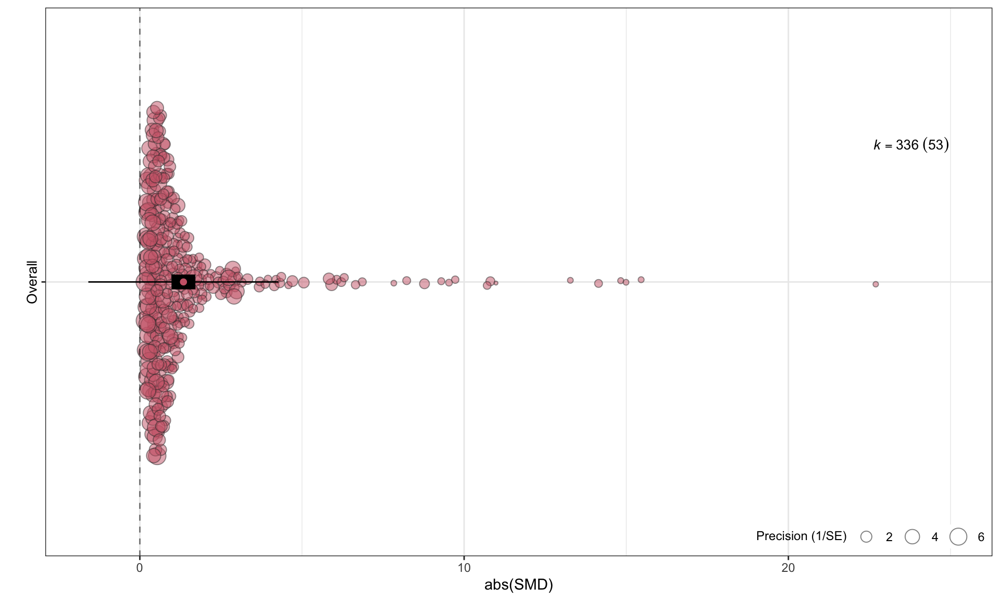
# meta-analysis using safe
ma_safe <- rma.mv(
yi = yi_lnM_safe,
V = vi_lnM_safe,
random = list(
~ 1 | Study,
~ 1 | ES.ID
),
#R = list(Species = corMat.env),
#Rscale = 0,
data = dat_cond,
method = "REML",
test = "t")
summary(ma_safe)
Multivariate Meta-Analysis Model (k = 336; method: REML)
logLik Deviance AIC BIC AICc
-403.4684 806.9368 812.9368 824.3792 813.0093
Variance Components:
estim sqrt nlvls fixed factor
sigma^2.1 0.5150 0.7176 53 no Study
sigma^2.2 0.3062 0.5534 336 no ES.ID
Test for Heterogeneity:
Q(df = 335) = 3647.4224, p-val < .0001
Model Results:
estimate se tval df pval ci.lb ci.ub
-0.1472 0.1153 -1.2766 335 0.2026 -0.3741 0.0796
---
Signif. codes: 0 '***' 0.001 '**' 0.01 '*' 0.05 '.' 0.1 ' ' 1i2_ml(ma_safe)I2_Total I2_Study I2_ES.ID
89.44776 56.09525 33.35251 ml_m1(ma_safe) M1_Total M1_Study M1_ES.ID
0.8602327 0.6812308 0.5252855 # adding overll to orchard plot
main2 <- mod_results(ma_safe, group = "Study")
main2 <- unclass(main2)
main2$mod_table$name <- "Overall"
main2$data$moderator <- "Overall"
class(main2) <- "orchard"
p2 <- orchard_plot(main2, xlab = "lnM",
group = "Study",
trunk.size = 0.6,
branch.size = 5) +
scale_colour_manual(values = rep("grey20",8)) +
scale_fill_manual(values = "#117733")
p2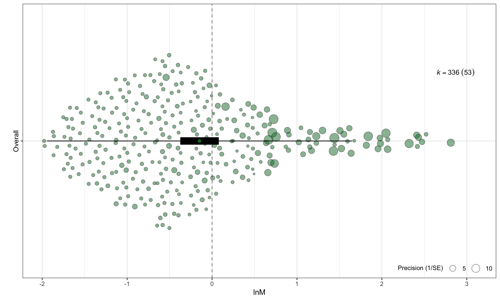
2.1.4 Meta-regression
# meta-regression abs(d)
mod_abs <- rma.mv(
yi = yi_d_abs,
V = vi_d_abs,
mods = ~ magnitude + duration + Recovery,
random = list(
~ 1 | Study,
~ 1 | ES.ID
),
data = dat_cond,
method = "REML",
test = "t")
summary(mod_abs)
Multivariate Meta-Analysis Model (k = 265; method: REML)
logLik Deviance AIC BIC AICc
-452.5102 905.0203 917.0203 938.4075 917.3510
Variance Components:
estim sqrt nlvls fixed factor
sigma^2.1 2.7288 1.6519 41 no Study
sigma^2.2 0.3319 0.5761 265 no ES.ID
Test for Residual Heterogeneity:
QE(df = 261) = 1769.3579, p-val < .0001
Test of Moderators (coefficients 2:4):
F(df1 = 3, df2 = 261) = 35.0981, p-val < .0001
Model Results:
estimate se tval df pval ci.lb ci.ub
intrcpt -1.6401 0.6135 -2.6734 261 0.0080 -2.8481 -0.4321 **
magnitude 3.5148 0.4732 7.4281 261 <.0001 2.5831 4.4466 ***
duration 2.6195 0.3295 7.9494 261 <.0001 1.9707 3.2684 ***
Recovery -0.7042 0.4981 -1.4139 261 0.1586 -1.6850 0.2765
---
Signif. codes: 0 '***' 0.001 '**' 0.01 '*' 0.05 '.' 0.1 ' ' 1# bubble plot
p3 <- bubble_plot(mod_abs, mod = "Recovery",
ylab = "abs(SMD)",
xlab = "Recovery period",
group = "Study") +
scale_colour_manual(values = rep("grey20",8)) +
scale_fill_manual(values = "#CC6677")
p3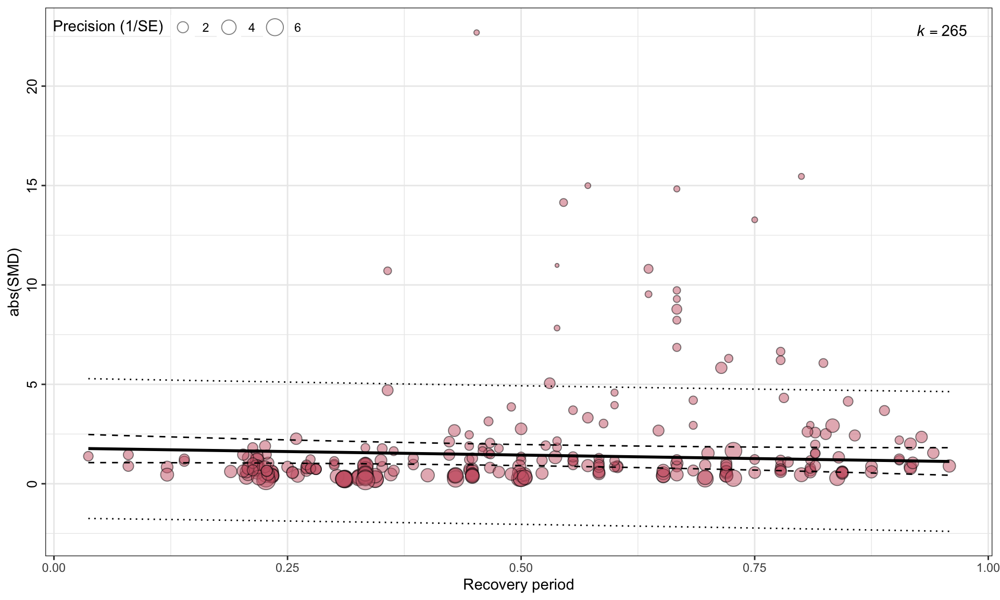
# meta-regression lnM
mod_safe <- rma.mv(
yi = yi_lnM_safe,
V = vi_lnM_safe,
mods = ~ magnitude + duration + Recovery,
random = list(
~ 1 | Study,
~ 1 | ES.ID
),
data = dat_cond,
method = "REML",
test = "t")
summary(mod_safe)
Multivariate Meta-Analysis Model (k = 265; method: REML)
logLik Deviance AIC BIC AICc
-276.3131 552.6262 564.6262 586.0134 564.9569
Variance Components:
estim sqrt nlvls fixed factor
sigma^2.1 0.6515 0.8072 41 no Study
sigma^2.2 0.1389 0.3726 265 no ES.ID
Test for Residual Heterogeneity:
QE(df = 261) = 2066.7910, p-val < .0001
Test of Moderators (coefficients 2:4):
F(df1 = 3, df2 = 261) = 25.1415, p-val < .0001
Model Results:
estimate se tval df pval ci.lb ci.ub
intrcpt -1.0460 0.3861 -2.7093 261 0.0072 -1.8062 -0.2858 **
magnitude 1.6702 0.3026 5.5199 261 <.0001 1.0744 2.2660 ***
duration 0.9036 0.2282 3.9601 261 <.0001 0.4543 1.3529 ***
Recovery -0.8233 0.3967 -2.0756 261 0.0389 -1.6044 -0.0423 *
---
Signif. codes: 0 '***' 0.001 '**' 0.01 '*' 0.05 '.' 0.1 ' ' 1# bubble plot
p4 <- bubble_plot(mod_safe, mod = "Recovery",
ylab = "lnM",
xlab = "Recovery period",
group = "Study",
legend.pos = "bottom.left") +
scale_colour_manual(values = rep("grey20",8)) +
scale_fill_manual(values = "#117733") 2.1.5 Egger regression (publication bias test)
# Creaing a variable using n0
dat_cond$n0 <- (dat_cond$n1i * dat_cond$n2i) / (dat_cond$n1i + dat_cond$n2i)
dat_cond$nSE <- 1 / sqrt(dat_cond$n0)
dat_cond$nV <- 1 / dat_cond$n0# using abs(d)
egger_abs <- rma.mv(
yi = yi_d_abs,
V = vi_d_abs,
mods = ~ nSE,
random = list(
~ 1 | Study,
~ 1 | ES.ID
),
data = dat_cond,
method = "REML",
test = "t")
summary(egger_abs)
Multivariate Meta-Analysis Model (k = 336; method: REML)
logLik Deviance AIC BIC AICc
-610.0077 1220.0155 1228.0155 1243.2600 1228.1371
Variance Components:
estim sqrt nlvls fixed factor
sigma^2.1 1.7731 1.3316 53 no Study
sigma^2.2 0.6157 0.7847 336 no ES.ID
Test for Residual Heterogeneity:
QE(df = 334) = 2664.7524, p-val < .0001
Test of Moderators (coefficient 2):
F(df1 = 1, df2 = 334) = 2.7804, p-val = 0.0964
Model Results:
estimate se tval df pval ci.lb ci.ub
intrcpt 0.7986 0.3840 2.0799 334 0.0383 0.0433 1.5539 *
nSE 1.0866 0.6516 1.6675 334 0.0964 -0.1952 2.3684 .
---
Signif. codes: 0 '***' 0.001 '**' 0.01 '*' 0.05 '.' 0.1 ' ' 1# bubble plot
p5 <- bubble_plot(egger_abs, mod = "nSE",
ylab = "abs(SMD)",
xlab = "sqrt(inverse sample size)",
group = "Study") +
scale_colour_manual(values = rep("grey20",8)) +
scale_fill_manual(values = "#CC6677")
p5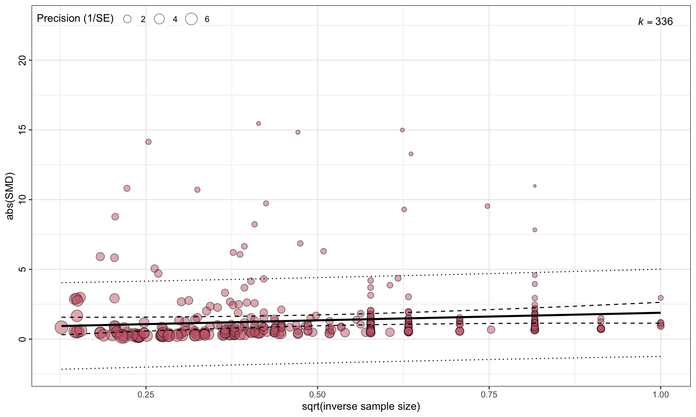
# using safe
egger_safe <- rma.mv(
yi = yi_lnM_safe,
V = vi_lnM_safe,
mods = ~ nSE,
random = list(
~ 1 | Study,
~ 1 | ES.ID
),
data = dat_cond,
method = "REML",
test = "t")
summary(egger_safe)
Multivariate Meta-Analysis Model (k = 336; method: REML)
logLik Deviance AIC BIC AICc
-394.7385 789.4770 797.4770 812.7216 797.5986
Variance Components:
estim sqrt nlvls fixed factor
sigma^2.1 0.5122 0.7157 53 no Study
sigma^2.2 0.2910 0.5394 336 no ES.ID
Test for Residual Heterogeneity:
QE(df = 334) = 3628.9754, p-val < .0001
Test of Moderators (coefficient 2):
F(df1 = 1, df2 = 334) = 14.8360, p-val = 0.0001
Model Results:
estimate se tval df pval ci.lb ci.ub
intrcpt -0.9505 0.2387 -3.9817 334 <.0001 -1.4200 -0.4809 ***
nSE 1.6148 0.4192 3.8518 334 0.0001 0.7901 2.4394 ***
---
Signif. codes: 0 '***' 0.001 '**' 0.01 '*' 0.05 '.' 0.1 ' ' 1# bubble plot
p6 <-bubble_plot(egger_safe, mod = "nSE",
ylab = "lnM",
xlab = "sqrt(inverse sample size)",
group = "Study",
legend.pos = "bottom.right") +
scale_colour_manual(values = rep("grey20",8)) +
scale_fill_manual(values = "#117733")
p6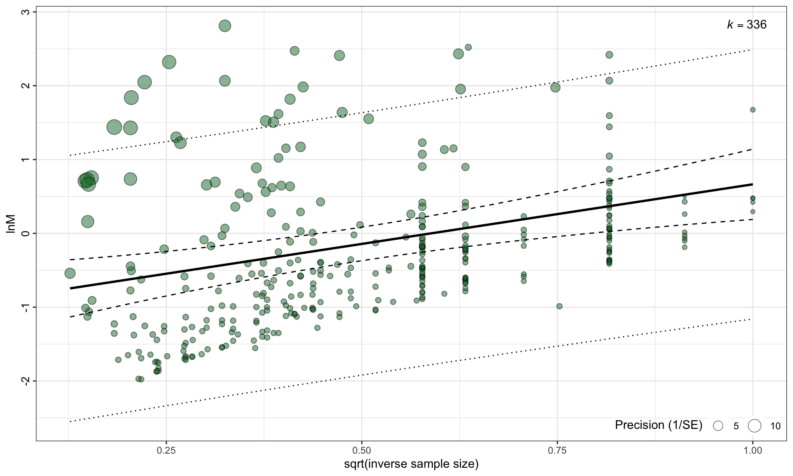
# equivalent to fitting V rather than SE
egger_safe2 <- rma.mv(
yi = yi_lnM_safe,
V = vi_lnM_safe,
mods = ~ nV,
random = list(
~ 1 | Study,
~ 1 | ES.ID
),
data = dat_cond,
method = "REML",
test = "t")
summary(egger_safe2)
Multivariate Meta-Analysis Model (k = 336; method: REML)
logLik Deviance AIC BIC AICc
-394.4735 788.9470 796.9470 812.1916 797.0686
Variance Components:
estim sqrt nlvls fixed factor
sigma^2.1 0.4988 0.7062 53 no Study
sigma^2.2 0.2915 0.5399 336 no ES.ID
Test for Residual Heterogeneity:
QE(df = 334) = 3622.4833, p-val < .0001
Test of Moderators (coefficient 2):
F(df1 = 1, df2 = 334) = 15.3643, p-val = 0.0001
Model Results:
estimate se tval df pval ci.lb ci.ub
intrcpt -0.5923 0.1612 -3.6747 334 0.0003 -0.9094 -0.2752 ***
nV 1.5038 0.3837 3.9197 334 0.0001 0.7491 2.2585 ***
---
Signif. codes: 0 '***' 0.001 '**' 0.01 '*' 0.05 '.' 0.1 ' ' 1# bubble plot
bubble_plot(egger_safe, mod = "nSE", ylab = "lnM",
xlab = "sqrt(inverse sample size)", group = "Study") +
scale_colour_manual(values = rep("grey20",8)) +
scale_fill_manual(values = "#117733") 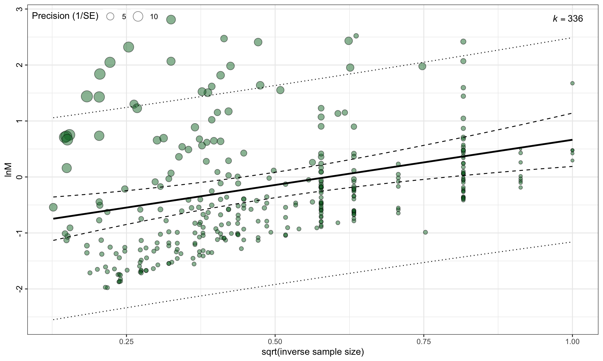
2.1.6 Sensitivity analysis
# sensitivity analysis - we want to get effect sizes where n1 + n2 = or > 40
dat_cond_sens <- dat_cond %>% filter((n1i + n2i) >= 40)ma_safe_sens <- rma.mv(
yi = yi_lnM_safe,
V = vi_lnM_safe,
random = list(
~ 1 | Study,
~ 1 | ES.ID
),
data = dat_cond_sens,
method = "REML",
test = "t")
summary(ma_safe_sens)
Multivariate Meta-Analysis Model (k = 77; method: REML)
logLik Deviance AIC BIC AICc
-102.8844 205.7687 211.7687 218.7609 212.1021
Variance Components:
estim sqrt nlvls fixed factor
sigma^2.1 0.8882 0.9424 16 no Study
sigma^2.2 0.4870 0.6979 77 no ES.ID
Test for Heterogeneity:
Q(df = 76) = 1810.0752, p-val < .0001
Model Results:
estimate se tval df pval ci.lb ci.ub
-0.4140 0.2706 -1.5297 76 0.1302 -0.9529 0.1250
---
Signif. codes: 0 '***' 0.001 '**' 0.01 '*' 0.05 '.' 0.1 ' ' 1summary(ma_safe)
Multivariate Meta-Analysis Model (k = 336; method: REML)
logLik Deviance AIC BIC AICc
-403.4684 806.9368 812.9368 824.3792 813.0093
Variance Components:
estim sqrt nlvls fixed factor
sigma^2.1 0.5150 0.7176 53 no Study
sigma^2.2 0.3062 0.5534 336 no ES.ID
Test for Heterogeneity:
Q(df = 335) = 3647.4224, p-val < .0001
Model Results:
estimate se tval df pval ci.lb ci.ub
-0.1472 0.1153 -1.2766 335 0.2026 -0.3741 0.0796
---
Signif. codes: 0 '***' 0.001 '**' 0.01 '*' 0.05 '.' 0.1 ' ' 1i2_ml(ma_safe_sens)I2_Total I2_Study I2_ES.ID
97.33069 62.86316 34.46753 #ml_m1(ma_safe_sens)
orchard_plot(ma_safe_sens, xlab = "lnM", group = "Study")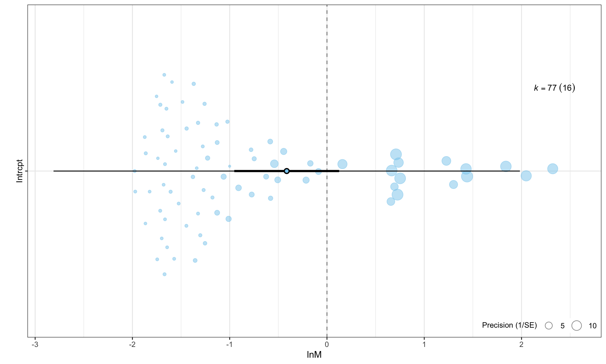
# doing meta-regression again
# meta-regression lnM
mod_safe2 <- rma.mv(
yi = yi_lnM_safe,
V = vi_lnM_safe,
mods = ~ magnitude + duration + Recovery + nSE,
random = list(
~ 1 | Study,
~ 1 | ES.ID
),
data = dat_cond,
method = "REML",
test = "t")
summary(mod_safe2)
Multivariate Meta-Analysis Model (k = 265; method: REML)
logLik Deviance AIC BIC AICc
-274.8924 549.7848 563.7848 588.7095 564.2292
Variance Components:
estim sqrt nlvls fixed factor
sigma^2.1 0.6579 0.8111 41 no Study
sigma^2.2 0.1404 0.3747 265 no ES.ID
Test for Residual Heterogeneity:
QE(df = 260) = 2066.7680, p-val < .0001
Test of Moderators (coefficients 2:5):
F(df1 = 4, df2 = 260) = 18.7533, p-val < .0001
Model Results:
estimate se tval df pval ci.lb ci.ub
intrcpt -1.1017 0.4219 -2.6114 260 0.0095 -1.9325 -0.2710 **
magnitude 1.6362 0.3214 5.0918 260 <.0001 1.0035 2.2690 ***
duration 0.8837 0.2369 3.7299 260 0.0002 0.4172 1.3503 ***
Recovery -0.8213 0.3978 -2.0645 260 0.0400 -1.6046 -0.0379 *
nSE 0.1608 0.4936 0.3257 260 0.7449 -0.8112 1.1328
---
Signif. codes: 0 '***' 0.001 '**' 0.01 '*' 0.05 '.' 0.1 ' ' 1r2_ml(mod_safe2) R2_marginal R2_conditional
0.3137357 0.8793222 bubble_plot(mod_safe2, mod = "Recovery",
ylab = "lnM",
xlab = "Recovery period",
group = "Study",
legend.pos = "bottom.left") +
scale_colour_manual(values = rep("grey20",8)) +
scale_fill_manual(values = "#117733") 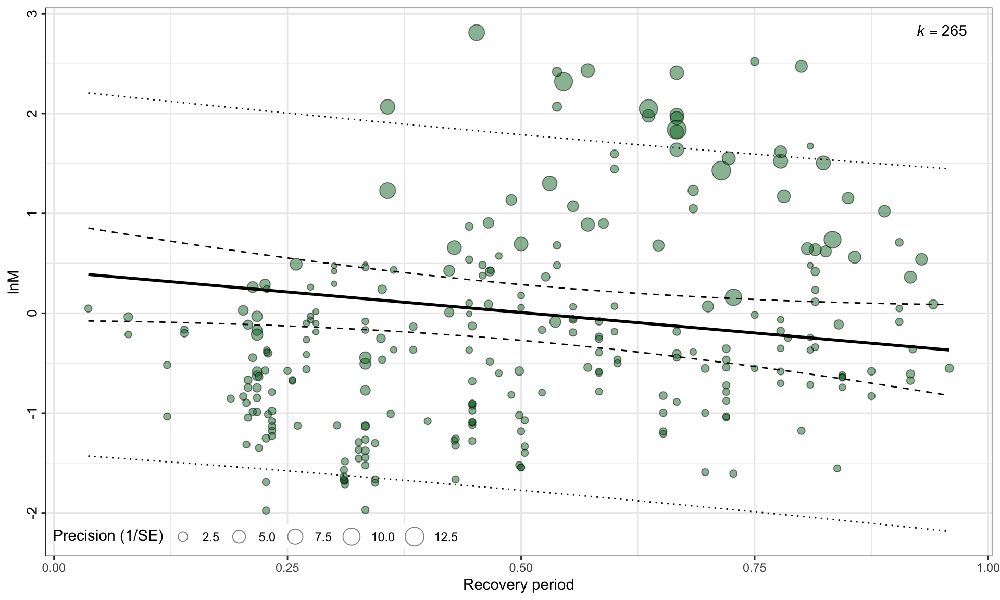
2.1.7 Figure
# making 2 x 3 panel fig
(p1 + p2) / (p3 + p4) / (p5 + p6) + plot_annotation(tag_levels = 'A') & theme(plot.tag = element_text(size = 16, face = "bold"))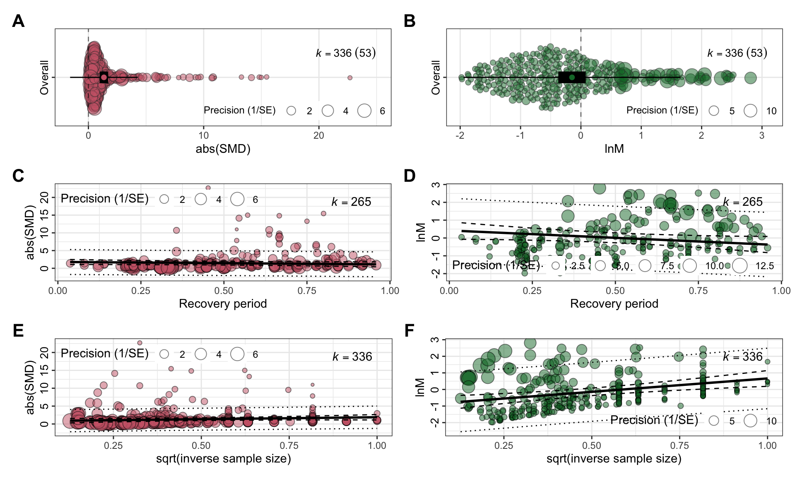
2.2 Example 2 — Kunc & Schmidt anthropogenic noise dataset
2.2.1 Data + effect size
data<-read.csv(here("data", "kunc_2019.csv"), na.strings=c("","NA"))
data<-as.data.frame(data)
data.2 <-data[which(data$species.latin!="NA"),] ### exclude cases where no species were provided
str(data.2)'data.frame': 491 obs. of 14 variables:
$ case.nr : int 31 32 33 34 35 36 37 43 44 45 ...
$ independent.effect.id: num 8.1 8.2 8.3 8.4 8.5 8.6 8.7 11.1 11.1 11.1 ...
$ study : chr "Kaiser.et.al.2011" "Kaiser.et.al.2011" "Kaiser.et.al.2011" "Kaiser.et.al.2011" ...
$ year : int 2011 2011 2011 2011 2011 2011 2011 2010 2010 2010 ...
$ journal : chr "Behaviour" "Behaviour" "Behaviour" "Behaviour" ...
$ taxon.for.plot : chr "amphibia" "amphibia" "amphibia" "amphibia" ...
$ species.english : chr "Morlets.tree.frog" "painted.tree.frog" "Gulf.coast.toad" "red.eyed.tree.frog" ...
$ species.latin : chr "Agalychnis.moreletii" "Tlalocohyla.picta" "Incilius.valliceps" "Agalychnis.callidryas" ...
$ sample.size.control : int 11 14 9 12 39 12 13 14 14 14 ...
$ mean.control : num 4.27 35.23 2.96 1.32 15.54 ...
$ sd.control : chr "3.64" "44.72" "1.57" "1.36" ...
$ sample.size.noise.1 : int 11 14 9 12 39 12 13 14 14 14 ...
$ mean.noise : num 4.22 37.21 4.79 2.38 19.79 ...
$ sd.noise : chr "3.25" "24.24" "1.31" "1.76" ...# make sd.control and sd.noise numeric
data.2$sd.control<-as.numeric(as.character(data.2$sd.control))
data.2$sd.noise<-as.numeric(as.character(data.2$sd.noise))
# exclude NA in dat$sd.control
data.2 <- data.2[which(!is.na(data.2$sd.control)),]
# hetro-verion of SMD
dat <- escalc(measure="SMDH",
m1i=mean.control, sd1i=sd.control, n1i=sample.size.control,
m2i=mean.noise, sd2i=sd.noise, n2i=sample.size.noise.1,
data=data.2,
append = TRUE,
var.names = c("yi_d", "vi_d"))
# fitering out NA for yi_d and vi_d
dat <- dat[which(!is.na(dat$yi_d)),]
dat <- dat %>% # <- your existing data frame
mutate(
abs_d = map2_dfr(yi_d, vi_d, ~ {
out <- folded_norm(.x, .y)
tibble(yi_d_abs = out["point"], vi_d_abs = out["var"])
})
) %>% # flatten the tibbles
unnest(c(abs_d))
# lnM
dat <- dat %>% mutate(
lnM_raw = pmap_dfr(
list(mean.control, mean.noise, sd.control, sd.noise, sample.size.control, sample.size.noise.1),
get_lnM_raw)
) %>% unnest(lnM_raw)
# SAFE is stochastic so set a seed
set.seed(123)
dat <- dat %>% mutate(
lnM_safe = pmap_dfr(
list(mean.control, mean.noise, sd.control, sd.noise, sample.size.control, sample.size.noise.1),
get_lnM_safe)
) %>% unnest(lnM_safe)2.2.2 How many lnM can be obtained?
stopifnot(exists("dat"), is.data.frame(dat))
n_total <- nrow(dat)
summary_tbl <- tibble::tibble(
Metric = c(
"Total effect sizes",
"Delta lnM: point estimate missing",
"Delta lnM: sampling variance missing",
"SAFE lnM: point estimate missing",
"SAFE lnM: sampling variance missing",
"Rescued by SAFE (point available when Delta missing)",
"Rescued by SAFE (variance available when Delta missing)"
),
Count = c(
n_total,
sum(is.na(dat$yi_lnM_raw)),
sum(is.na(dat$vi_lnM_raw)),
sum(is.na(dat$yi_lnM_safe)),
sum(is.na(dat$vi_lnM_safe)),
sum(is.na(dat$yi_lnM_raw) & !is.na(dat$yi_lnM_safe)),
sum(is.na(dat$vi_lnM_raw) & !is.na(dat$vi_lnM_safe))
)
) %>%
dplyr::mutate(
Percent = dplyr::if_else(
Metric == "Total effect sizes",
NA_real_,
100 * Count / n_total
)
)
# Headline numbers people care about
n_saved <- sum(!is.na(dat$yi_lnM_safe))
p_saved <- 100 * n_saved / n_total
cat(sprintf(
"\n\n**SAFE produced usable lnM point estimates for %d/%d effect sizes (%.1f%%).**\n\n",
n_saved, n_total, p_saved
))
**SAFE produced usable lnM point estimates for 486/486 effect sizes (100.0%).**summary_tbl %>%
kableExtra::kable(
digits = 1,
caption = "Data availability for lnM estimates: Delta plug-in vs SAFE (counts and % of all effect sizes).",
align = c("l", "r", "r")
) %>%
kableExtra::kable_styling(full_width = FALSE)| Metric | Count | Percent |
|---|---|---|
| Total effect sizes | 486 | NA |
| Delta lnM: point estimate missing | 177 | 36.4 |
| Delta lnM: sampling variance missing | 177 | 36.4 |
| SAFE lnM: point estimate missing | 0 | 0.0 |
| SAFE lnM: sampling variance missing | 0 | 0.0 |
| Rescued by SAFE (point available when Delta missing) | 177 | 36.4 |
| Rescued by SAFE (variance available when Delta missing) | 177 | 36.4 |
2.2.3 Meta-analysis model
# restrict data just for birds, mammals, amphibians and fish
dat<-dat[which(dat$taxon.for.plot!="reptilia" &
dat$taxon.for.plot!="mollusca" &
dat$taxon.for.plot!="arthropoda"),]# meta-analysis using abs(d)
ma_abs <- rma.mv(
yi = yi_d_abs,
V = vi_d_abs,
random = list(
~ 1 | study,
~ 1 |case.nr
),
data = dat,
method = "REML",
test = "t")
summary(ma_abs)
Multivariate Meta-Analysis Model (k = 379; method: REML)
logLik Deviance AIC BIC AICc
-489.6619 979.3238 985.3238 997.1284 985.3879
Variance Components:
estim sqrt nlvls fixed factor
sigma^2.1 0.4514 0.6719 88 no study
sigma^2.2 0.0110 0.1047 379 no case.nr
Test for Heterogeneity:
Q(df = 378) = 1464.9688, p-val < .0001
Model Results:
estimate se tval df pval ci.lb ci.ub
0.8663 0.0772 11.2195 378 <.0001 0.7145 1.0182 ***
---
Signif. codes: 0 '***' 0.001 '**' 0.01 '*' 0.05 '.' 0.1 ' ' 1i2_ml(ma_abs) I2_Total I2_study I2_case.nr
84.992852 82.976595 2.016257 # adding overall to orchard plot
main <- mod_results(ma_abs, group = "study")
main <- unclass(main)
main$mod_table$name <- "Overall"
main$data$moderator <- "Overall"
class(main) <- "orchard"
p7 <- orchard_plot(main, xlab = "abs(SMD)",
group = "study",
trunk.size = 0.6,
branch.size = 5) +
scale_colour_manual(values = rep("grey20",8)) +
scale_fill_manual(values = "#CC6677")
p7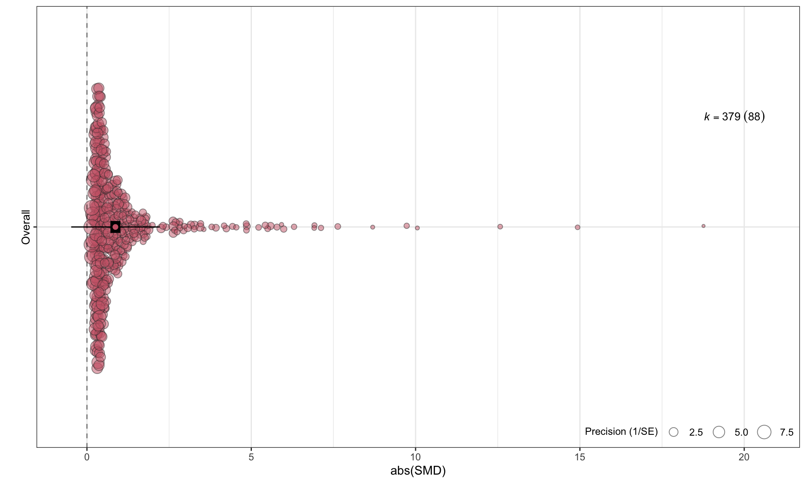
# meta-analysis using safe
ma_safe <- rma.mv(
yi = yi_lnM_safe,
V = vi_lnM_safe,
random = list(
~ 1 | study,
~ 1 |case.nr
),
data = dat,
method = "REML",
test = "t")
summary(ma_safe)
Multivariate Meta-Analysis Model (k = 379; method: REML)
logLik Deviance AIC BIC AICc
-439.0767 878.1534 884.1534 895.9580 884.2175
Variance Components:
estim sqrt nlvls fixed factor
sigma^2.1 0.6201 0.7875 88 no study
sigma^2.2 0.1974 0.4443 379 no case.nr
Test for Heterogeneity:
Q(df = 378) = 3279.2244, p-val < .0001
Model Results:
estimate se tval df pval ci.lb ci.ub
-0.4624 0.0955 -4.8401 378 <.0001 -0.6503 -0.2746 ***
---
Signif. codes: 0 '***' 0.001 '**' 0.01 '*' 0.05 '.' 0.1 ' ' 1i2_ml(ma_safe) I2_Total I2_study I2_case.nr
83.57773 63.39322 20.18452 # adding overll to orchard plot
main2 <- mod_results(ma_safe, group = "study")
main2 <- unclass(main2)
main2$mod_table$name <- "Overall"
main2$data$moderator <- "Overall"
class(main2) <- "orchard"
p8 <- orchard_plot(main2, xlab = "lnM",
group = "study",
trunk.size = 0.8,
branch.size = 5) +
scale_colour_manual(values = rep("grey20",8)) +
scale_fill_manual(values = "#117733")
p8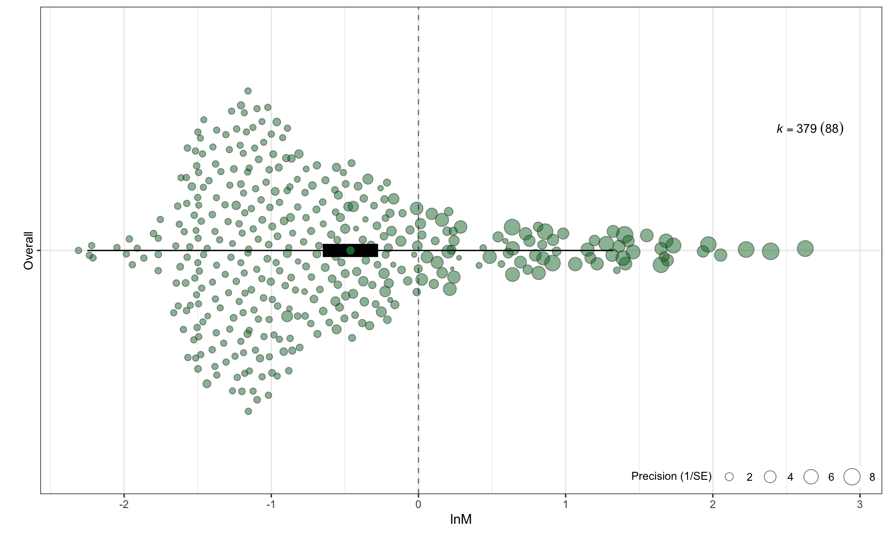
2.2.4 Meta-regression
# meta-regression abs(d) using taxon.for.plot
mod_abs <- rma.mv(
yi = yi_d_abs,
V = vi_d_abs,
mods = ~ taxon.for.plot - 1,
random = list(
~ 1 | study,
~ 1 |case.nr
),
data = dat,
method = "REML",
test = "t")
summary(mod_abs)
Multivariate Meta-Analysis Model (k = 379; method: REML)
logLik Deviance AIC BIC AICc
-479.6620 959.3239 971.3239 994.8855 971.5522
Variance Components:
estim sqrt nlvls fixed factor
sigma^2.1 0.3997 0.6323 88 no study
sigma^2.2 0.0117 0.1083 379 no case.nr
Test for Residual Heterogeneity:
QE(df = 375) = 1382.5880, p-val < .0001
Test of Moderators (coefficients 1:4):
F(df1 = 4, df2 = 375) = 37.4973, p-val < .0001
Model Results:
estimate se tval df pval ci.lb ci.ub
taxon.for.plotamphibia 0.6673 0.1832 3.6430 375 0.0003 0.3071 1.0275
taxon.for.plotaves 0.7237 0.1133 6.3872 375 <.0001 0.5009 0.9465
taxon.for.plotfish 0.8606 0.1370 6.2813 375 <.0001 0.5912 1.1300
taxon.for.plotmammalia 1.4839 0.1975 7.5143 375 <.0001 1.0956 1.8722
taxon.for.plotamphibia ***
taxon.for.plotaves ***
taxon.for.plotfish ***
taxon.for.plotmammalia ***
---
Signif. codes: 0 '***' 0.001 '**' 0.01 '*' 0.05 '.' 0.1 ' ' 1# orchard plot
p9 <- orchard_plot(mod_abs,
mod = "taxon.for.plot",
xlab = "abs(SMD)",
group = "study",
trunk.size = 0.6,
branch.size = 5) +
scale_colour_manual(values = rep("grey20",8)) +
scale_fill_manual(values = rep("#CC6677", 4))
# multiple comparison
summary(glht(mod_abs, linfct=cbind(contrMat(rep(1,4), type="Tukey"))), test=adjusted("none"))
Simultaneous Tests for General Linear Hypotheses
Fit: rma.mv(yi = yi_d_abs, V = vi_d_abs, mods = ~taxon.for.plot -
1, data = dat, random = list(~1 | study, ~1 | case.nr), method = "REML",
test = "t")
Linear Hypotheses:
Estimate Std. Error z value Pr(>|z|)
2 - 1 == 0 0.0564 0.2154 0.262 0.793438
3 - 1 == 0 0.1932 0.2288 0.845 0.398267
4 - 1 == 0 0.8166 0.2694 3.032 0.002432 **
3 - 2 == 0 0.1368 0.1778 0.770 0.441537
4 - 2 == 0 0.7602 0.2277 3.339 0.000841 ***
4 - 3 == 0 0.6234 0.2404 2.594 0.009498 **
---
Signif. codes: 0 '***' 0.001 '**' 0.01 '*' 0.05 '.' 0.1 ' ' 1
(Adjusted p values reported -- none method)p9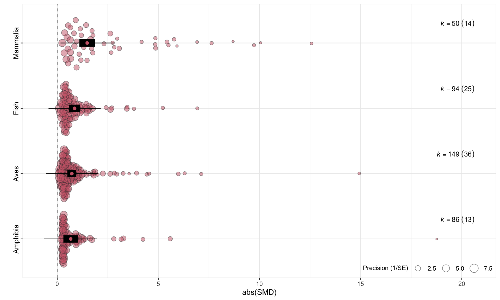
# meta-regression safe using taxon.for.plot
mod_safe <- rma.mv(
yi = yi_lnM_safe,
V = vi_lnM_safe,
mods = ~ taxon.for.plot -1,
random = list(
~ 1 | study,
~ 1 |case.nr
),
data = dat,
method = "REML",
test = "t")
summary(mod_safe)
Multivariate Meta-Analysis Model (k = 379; method: REML)
logLik Deviance AIC BIC AICc
-427.7900 855.5801 867.5801 891.1417 867.8084
Variance Components:
estim sqrt nlvls fixed factor
sigma^2.1 0.5318 0.7292 88 no study
sigma^2.2 0.1977 0.4447 379 no case.nr
Test for Residual Heterogeneity:
QE(df = 375) = 2835.2320, p-val < .0001
Test of Moderators (coefficients 1:4):
F(df1 = 4, df2 = 375) = 10.0657, p-val < .0001
Model Results:
estimate se tval df pval ci.lb
taxon.for.plotamphibia -0.7430 0.2308 -3.2188 375 0.0014 -1.1968
taxon.for.plotaves -0.5886 0.1419 -4.1486 375 <.0001 -0.8676
taxon.for.plotfish -0.5616 0.1700 -3.3040 375 0.0010 -0.8957
taxon.for.plotmammalia 0.2939 0.2206 1.3323 375 0.1836 -0.1399
ci.ub
taxon.for.plotamphibia -0.2891 **
taxon.for.plotaves -0.3096 ***
taxon.for.plotfish -0.2274 **
taxon.for.plotmammalia 0.7276
---
Signif. codes: 0 '***' 0.001 '**' 0.01 '*' 0.05 '.' 0.1 ' ' 1# orchard plot
p10 <- orchard_plot(mod_safe,
mod = "taxon.for.plot",
xlab = "lnM",
group = "study",
trunk.size = 0.6,
branch.size = 5) +
scale_colour_manual(values = rep("grey20",8)) +
scale_fill_manual(values = rep("#117733", 4))
# multiple comparison
summary(glht(mod_safe, linfct=cbind(contrMat(rep(1,4), type="Tukey"))), test=adjusted("none"))
Simultaneous Tests for General Linear Hypotheses
Fit: rma.mv(yi = yi_lnM_safe, V = vi_lnM_safe, mods = ~taxon.for.plot -
1, data = dat, random = list(~1 | study, ~1 | case.nr), method = "REML",
test = "t")
Linear Hypotheses:
Estimate Std. Error z value Pr(>|z|)
2 - 1 == 0 0.15434 0.27094 0.570 0.568925
3 - 1 == 0 0.18140 0.28664 0.633 0.526839
4 - 1 == 0 1.03683 0.31927 3.247 0.001164 **
3 - 2 == 0 0.02706 0.22140 0.122 0.902718
4 - 2 == 0 0.88250 0.26227 3.365 0.000766 ***
4 - 3 == 0 0.85544 0.27847 3.072 0.002127 **
---
Signif. codes: 0 '***' 0.001 '**' 0.01 '*' 0.05 '.' 0.1 ' ' 1
(Adjusted p values reported -- none method)p10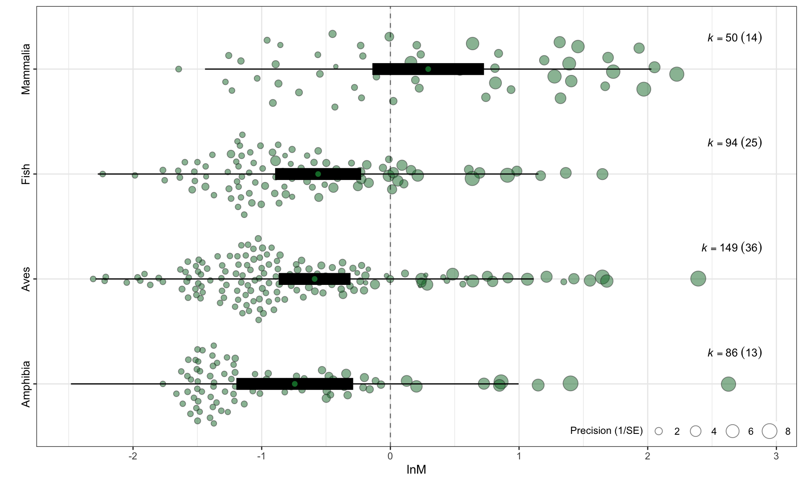
2.2.5 Egger regression (publication bias test)
# Creaing a variable using n0
dat$n0 <- (dat$sample.size.control * dat$sample.size.noise.1
) / (dat$sample.size.control + dat$sample.size.noise.1)
dat$nSE <- 1 / sqrt(dat$n0)
dat$nV <- 1 / dat$n0# using abs(d)
egger_abs <- rma.mv(
yi = yi_d_abs,
V = vi_d_abs,
mods = ~ nSE,
random = list(
~ 1 | study,
~ 1 |case.nr
),
data = dat,
method = "REML",
test = "t")
summary(egger_abs)
Multivariate Meta-Analysis Model (k = 379; method: REML)
logLik Deviance AIC BIC AICc
-487.1753 974.3506 982.3506 998.0795 982.4581
Variance Components:
estim sqrt nlvls fixed factor
sigma^2.1 0.4097 0.6401 88 no study
sigma^2.2 0.0111 0.1052 379 no case.nr
Test for Residual Heterogeneity:
QE(df = 377) = 1368.1531, p-val < .0001
Test of Moderators (coefficient 2):
F(df1 = 1, df2 = 377) = 3.2713, p-val = 0.0713
Model Results:
estimate se tval df pval ci.lb ci.ub
intrcpt 0.5739 0.1744 3.2912 377 0.0011 0.2310 0.9168 **
nSE 0.7707 0.4261 1.8087 377 0.0713 -0.0672 1.6085 .
---
Signif. codes: 0 '***' 0.001 '**' 0.01 '*' 0.05 '.' 0.1 ' ' 1# bubble plot
p11 <- bubble_plot(egger_abs, mod = "nSE",
ylab = "abs(SMD)",
xlab = "sqrt(inverse sample size)",
group = "study") +
scale_colour_manual(values = rep("grey20",8)) +
scale_fill_manual(values = "#CC6677")
p11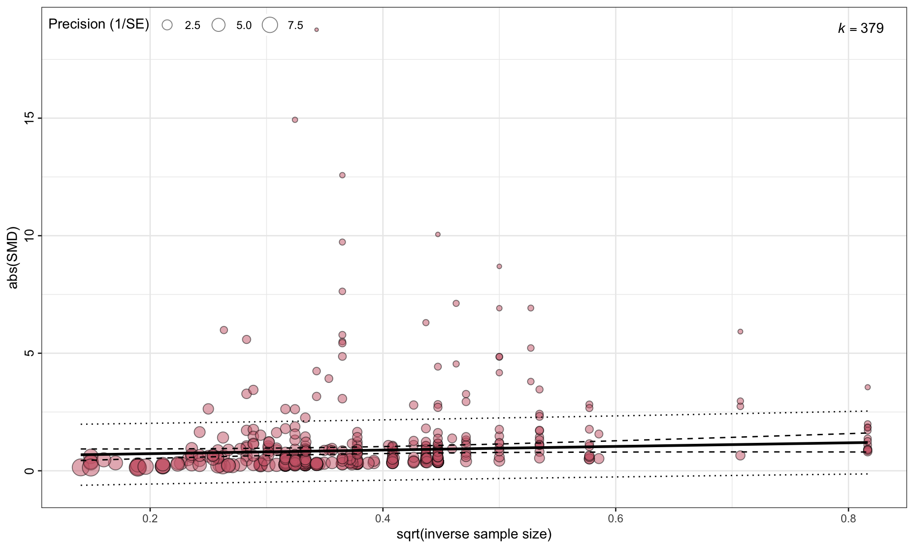
# using safe
egger_safe <- rma.mv(
yi = yi_lnM_safe,
V = vi_lnM_safe,
mods = ~ nSE,
random = list(
~ 1 | study,
~ 1 |case.nr
),
data = dat,
method = "REML",
test = "t")
summary(egger_safe)
Multivariate Meta-Analysis Model (k = 379; method: REML)
logLik Deviance AIC BIC AICc
-429.7253 859.4507 867.4507 883.1796 867.5582
Variance Components:
estim sqrt nlvls fixed factor
sigma^2.1 0.4898 0.6999 88 no study
sigma^2.2 0.2050 0.4528 379 no case.nr
Test for Residual Heterogeneity:
QE(df = 377) = 3214.3519, p-val < .0001
Test of Moderators (coefficient 2):
F(df1 = 1, df2 = 377) = 17.6796, p-val < .0001
Model Results:
estimate se tval df pval ci.lb ci.ub
intrcpt -1.4538 0.2526 -5.7547 377 <.0001 -1.9505 -0.9571 ***
nSE 2.5974 0.6177 4.2047 377 <.0001 1.3828 3.8120 ***
---
Signif. codes: 0 '***' 0.001 '**' 0.01 '*' 0.05 '.' 0.1 ' ' 1# bubble plot
p12 <- bubble_plot(egger_safe, mod = "nSE",
ylab = "lnM",
xlab = "sqrt(inverse sample size)",
group = "study",
legend.pos = "bottom.right") +
scale_colour_manual(values = rep("grey20",8)) +
scale_fill_manual(values = "#117733")
p12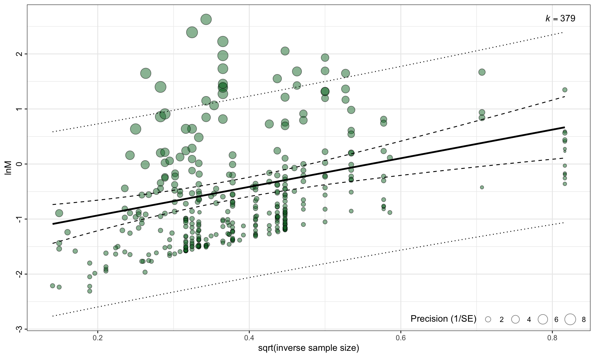
# equivalent to fitting V rather than SE
egger_safe2 <- rma.mv(
yi = yi_lnM_safe,
V = vi_lnM_safe,
mods = ~ nV,
random = list(
~ 1 | study,
~ 1 |case.nr
),
data = dat,
method = "REML",
test = "t")
summary(egger_safe2)
Multivariate Meta-Analysis Model (k = 379; method: REML)
logLik Deviance AIC BIC AICc
-429.9611 859.9222 867.9222 883.6512 868.0298
Variance Components:
estim sqrt nlvls fixed factor
sigma^2.1 0.5118 0.7154 88 no study
sigma^2.2 0.2021 0.4496 379 no case.nr
Test for Residual Heterogeneity:
QE(df = 377) = 3242.6201, p-val < .0001
Test of Moderators (coefficient 2):
F(df1 = 1, df2 = 377) = 16.4280, p-val < .0001
Model Results:
estimate se tval df pval ci.lb ci.ub
intrcpt -0.9294 0.1463 -6.3507 377 <.0001 -1.2172 -0.6417 ***
nV 2.9228 0.7211 4.0531 377 <.0001 1.5049 4.3407 ***
---
Signif. codes: 0 '***' 0.001 '**' 0.01 '*' 0.05 '.' 0.1 ' ' 1# bubble plot
bubble_plot(egger_safe2, mod = "nV", ylab = "lnM", xlab = "sqrt(inverse sample size)", group = "study")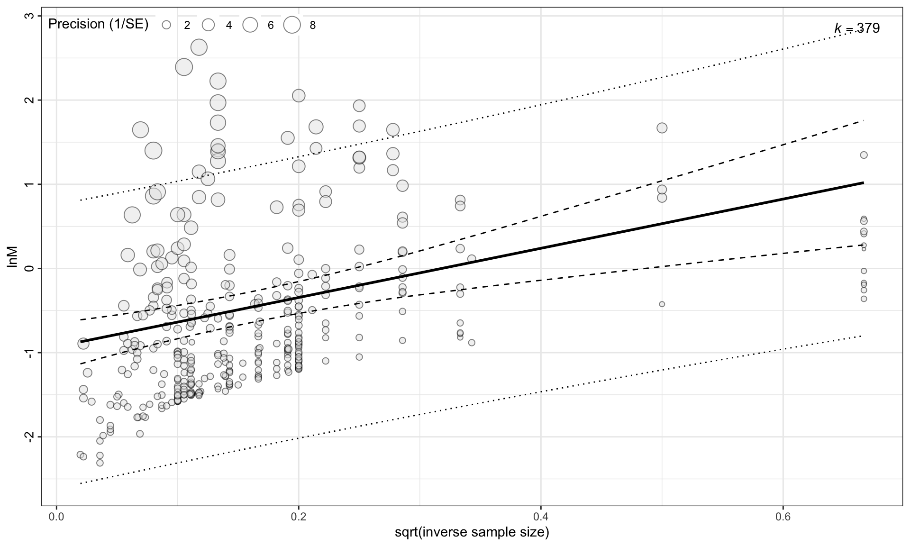
2.2.6 Sensitivity analysis
# sensitivity analysis - we want to get effect sizes where n1 + n2 = or > 40
dat_sens <- dat %>% filter((sample.size.control + sample.size.noise.1) >= 40)ma_safe_sens <- rma.mv(
yi = yi_lnM_safe,
V = vi_lnM_safe,
random = list(
~ 1 | study,
~ 1 |case.nr
),
data = dat_sens,
method = "REML",
test = "t")
summary(ma_safe_sens)
Multivariate Meta-Analysis Model (k = 105; method: REML)
logLik Deviance AIC BIC AICc
-113.7253 227.4506 233.4506 241.3838 233.6906
Variance Components:
estim sqrt nlvls fixed factor
sigma^2.1 0.6473 0.8045 36 no study
sigma^2.2 0.1032 0.3213 105 no case.nr
Test for Heterogeneity:
Q(df = 104) = 819.2445, p-val < .0001
Model Results:
estimate se tval df pval ci.lb ci.ub
-0.7587 0.1520 -4.9910 104 <.0001 -1.0601 -0.4572 ***
---
Signif. codes: 0 '***' 0.001 '**' 0.01 '*' 0.05 '.' 0.1 ' ' 1summary(ma_safe)
Multivariate Meta-Analysis Model (k = 379; method: REML)
logLik Deviance AIC BIC AICc
-439.0767 878.1534 884.1534 895.9580 884.2175
Variance Components:
estim sqrt nlvls fixed factor
sigma^2.1 0.6201 0.7875 88 no study
sigma^2.2 0.1974 0.4443 379 no case.nr
Test for Heterogeneity:
Q(df = 378) = 3279.2244, p-val < .0001
Model Results:
estimate se tval df pval ci.lb ci.ub
-0.4624 0.0955 -4.8401 378 <.0001 -0.6503 -0.2746 ***
---
Signif. codes: 0 '***' 0.001 '**' 0.01 '*' 0.05 '.' 0.1 ' ' 1i2_ml(ma_safe_sens) I2_Total I2_study I2_case.nr
84.43984 72.82513 11.61471 orchard_plot(ma_safe_sens, xlab = "lnM", group = "study")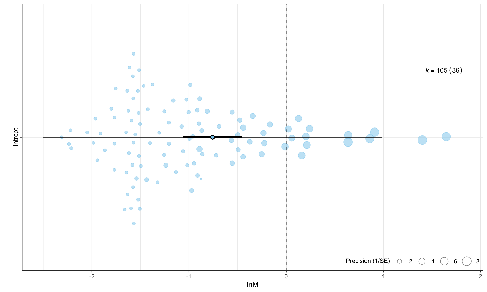
# doing meta-regression again
# meta-regression safe using taxon.for.plot
mod_safe2 <- rma.mv(
yi = yi_lnM_safe,
V = vi_lnM_safe,
mods = ~ taxon.for.plot - 1 + nSE,
random = list(
~ 1 | study,
~ 1 |case.nr
),
data = dat,
method = "REML",
test = "t")
summary(mod_safe2)
Multivariate Meta-Analysis Model (k = 379; method: REML)
logLik Deviance AIC BIC AICc
-420.0333 840.0666 854.0666 881.5364 854.3726
Variance Components:
estim sqrt nlvls fixed factor
sigma^2.1 0.4400 0.6633 88 no study
sigma^2.2 0.2041 0.4518 379 no case.nr
Test for Residual Heterogeneity:
QE(df = 374) = 2823.3649, p-val < .0001
Test of Moderators (coefficients 1:5):
F(df1 = 5, df2 = 374) = 11.9510, p-val < .0001
Model Results:
estimate se tval df pval ci.lb
taxon.for.plotamphibia -1.5265 0.3010 -5.0710 374 <.0001 -2.1184
taxon.for.plotaves -1.4836 0.2751 -5.3930 374 <.0001 -2.0246
taxon.for.plotfish -1.3891 0.2734 -5.0808 374 <.0001 -1.9268
taxon.for.plotmammalia -0.7052 0.3385 -2.0837 374 0.0379 -1.3708
nSE 2.2944 0.6151 3.7301 374 0.0002 1.0849
ci.ub
taxon.for.plotamphibia -0.9346 ***
taxon.for.plotaves -0.9427 ***
taxon.for.plotfish -0.8515 ***
taxon.for.plotmammalia -0.0397 *
nSE 3.5038 ***
---
Signif. codes: 0 '***' 0.001 '**' 0.01 '*' 0.05 '.' 0.1 ' ' 1# comparing
summary(mod_safe)
Multivariate Meta-Analysis Model (k = 379; method: REML)
logLik Deviance AIC BIC AICc
-427.7900 855.5801 867.5801 891.1417 867.8084
Variance Components:
estim sqrt nlvls fixed factor
sigma^2.1 0.5318 0.7292 88 no study
sigma^2.2 0.1977 0.4447 379 no case.nr
Test for Residual Heterogeneity:
QE(df = 375) = 2835.2320, p-val < .0001
Test of Moderators (coefficients 1:4):
F(df1 = 4, df2 = 375) = 10.0657, p-val < .0001
Model Results:
estimate se tval df pval ci.lb
taxon.for.plotamphibia -0.7430 0.2308 -3.2188 375 0.0014 -1.1968
taxon.for.plotaves -0.5886 0.1419 -4.1486 375 <.0001 -0.8676
taxon.for.plotfish -0.5616 0.1700 -3.3040 375 0.0010 -0.8957
taxon.for.plotmammalia 0.2939 0.2206 1.3323 375 0.1836 -0.1399
ci.ub
taxon.for.plotamphibia -0.2891 **
taxon.for.plotaves -0.3096 ***
taxon.for.plotfish -0.2274 **
taxon.for.plotmammalia 0.7276
---
Signif. codes: 0 '***' 0.001 '**' 0.01 '*' 0.05 '.' 0.1 ' ' 1r2_ml(mod_safe2) R2_marginal R2_conditional
0.2127422 0.7505219 results <- mod_results(mod_safe2,
group = "study",
mod = "taxon.for.plot",
at = list(nSE = c(0)))
# orchard plot
# probably closer to the truth
orchard_plot(results,
mod = "taxon.for.plot",
xlab = "lnM",
group = "study",
trunk.size = 0.6,
branch.size = 5) +
scale_colour_manual(values = rep("grey20",8)) +
scale_fill_manual(values = rep("#117733", 4)) 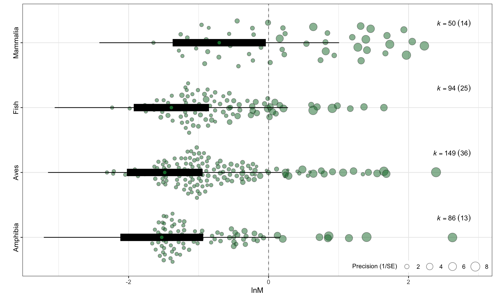
# sensivity + nSE - even smaller
mod_safe3 <- rma.mv(
yi = yi_lnM_safe,
V = vi_lnM_safe,
mods = ~ taxon.for.plot - 1 + nSE,
random = list(
~ 1 | study,
~ 1 |case.nr
),
data = dat_sens,
method = "REML",
test = "t")
summary(mod_safe3)
Multivariate Meta-Analysis Model (k = 105; method: REML)
logLik Deviance AIC BIC AICc
-103.7272 207.4544 221.4544 239.6906 222.6718
Variance Components:
estim sqrt nlvls fixed factor
sigma^2.1 0.5488 0.7408 36 no study
sigma^2.2 0.1008 0.3175 105 no case.nr
Test for Residual Heterogeneity:
QE(df = 100) = 756.9787, p-val < .0001
Test of Moderators (coefficients 1:5):
F(df1 = 5, df2 = 100) = 7.6613, p-val < .0001
Model Results:
estimate se tval df pval ci.lb
taxon.for.plotamphibia -2.6854 0.7538 -3.5625 100 0.0006 -4.1809
taxon.for.plotaves -2.9472 0.7147 -4.1239 100 <.0001 -4.3651
taxon.for.plotfish -2.4191 0.6566 -3.6841 100 0.0004 -3.7218
taxon.for.plotmammalia -2.2073 0.8171 -2.7015 100 0.0081 -3.8284
nSE 7.1010 2.4787 2.8648 100 0.0051 2.1834
ci.ub
taxon.for.plotamphibia -1.1899 ***
taxon.for.plotaves -1.5293 ***
taxon.for.plotfish -1.1163 ***
taxon.for.plotmammalia -0.5863 **
nSE 12.0187 **
---
Signif. codes: 0 '***' 0.001 '**' 0.01 '*' 0.05 '.' 0.1 ' ' 1r2_ml(mod_safe3) R2_marginal R2_conditional
0.1755865 0.8720546 results2 <- mod_results(mod_safe3,
group = "study",
mod = "taxon.for.plot",
at = list(nSE = c(0)))
# orchard plot
# probably closer to the truth
orchard_plot(results2,
mod = "taxon.for.plot",
xlab = "lnM",
group = "study",
trunk.size = 0.6,
branch.size = 5) +
scale_colour_manual(values = rep("grey20",8)) +
scale_fill_manual(values = rep("#117733", 4)) 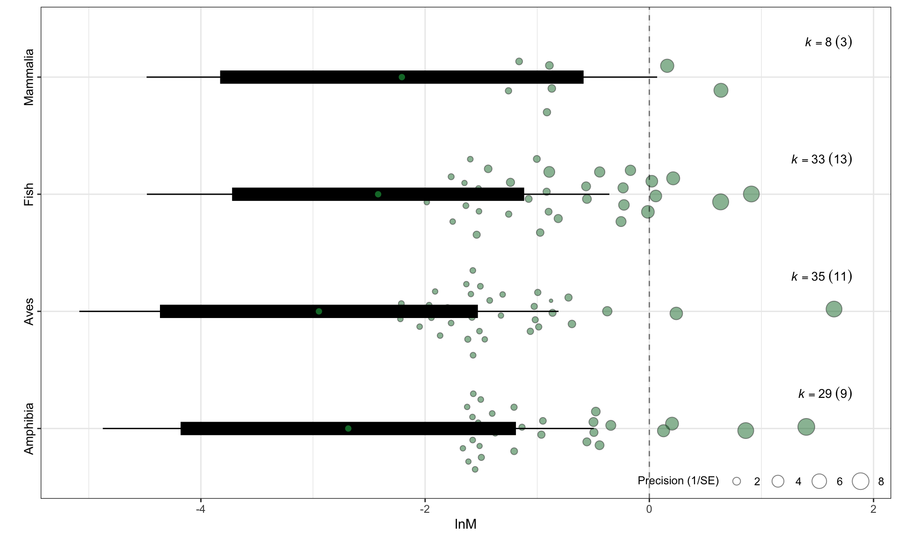
2.2.7 Figure 4
# making 2 x 3 panel fig
(p7 + p8) / (p9 + p10) / (p11 + p12) + plot_annotation(tag_levels = 'A') & theme(plot.tag = element_text(size = 16, face = "bold"))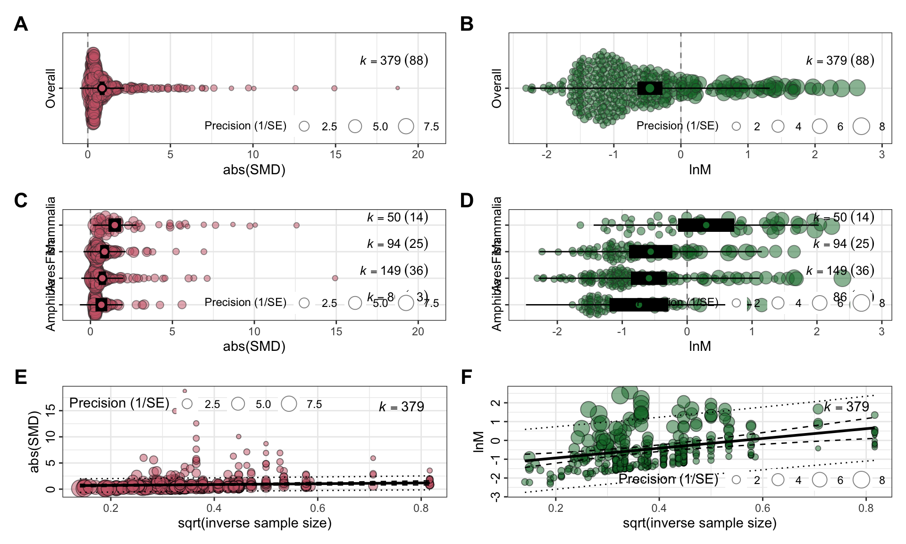
3 Part II — Simulation reproduction (figures + tables)
3.1 Figures
3.1.1 Load summary results
# to do
results <- readRDS( here::here("results", "lnM_summary_SAFEfun_2025-12-21.rds"))
results <- results %>%
mutate(facet_label = paste0(design, " n1=", n1, " n2=", n2))
facet_info <- results %>% distinct(facet_label, design, n1, n2)
balanced_ind <- facet_info %>%
filter(design == "indep", n1 == n2) %>% arrange(n1) %>% pull(facet_label)
unbalanced_ind <- facet_info %>%
filter(design == "indep", n1 != n2) %>% arrange(n1) %>% pull(facet_label)
paired_balanced <- facet_info %>%
filter(design == "paired") %>% arrange(n1) %>% pull(facet_label)
new_levels <- c(balanced_ind, unbalanced_ind, paired_balanced)
results <- results %>% mutate(facet_label = factor(facet_label, levels = new_levels))
strip_labeller <- function(x) gsub(" n1=", " n1=", gsub(" n2=", " n2=", x))
base_theme <- theme_bw(11) +
theme(
legend.title = element_text(),
legend.position = "right",
strip.background = element_rect(fill = "grey85", colour = "grey40"),
strip.text = element_text(face = "plain"),
panel.grid.minor = element_blank()
)3.1.2 Figure 1 — Bias of point estimates
if (exists("results")) {
bias_df <- dplyr::bind_rows(
results %>% dplyr::select(theta, facet_label, delta_bias) %>%
dplyr::rename(bias = delta_bias) %>% dplyr::mutate(estimator = "PI"),
results %>% dplyr::select(theta, facet_label, safe_bias) %>%
dplyr::rename(bias = safe_bias) %>% dplyr::mutate(estimator = "SAFE")
)
ggplot(bias_df, aes(theta, bias, colour = estimator, group = estimator)) +
geom_hline(yintercept = 0, linetype = "dashed", colour = "grey50") +
geom_line(linewidth = 0.6) +
facet_wrap(~ facet_label, ncol = 4, nrow = 3,
labeller = labeller(facet_label = strip_labeller)) +
labs(x = expression(theta),
y = "Bias (estimate − true lnM)",
colour = "estimator") +
base_theme +
annotate("text", x = 0.7, y = max(bias_df$bias, na.rm = TRUE),
label = "Target: 0 bias\nBias typically shrinks\nas θ and n increase",
hjust = 0, vjust = 1, size = 3, colour = "grey25")
}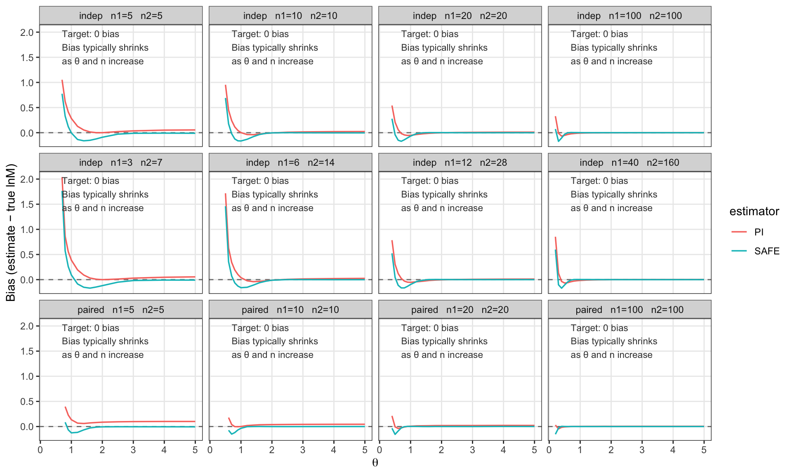
3.1.3 Figure 2 — Relative bias of variance estimates
if (exists("results")) {
rb_df <- dplyr::bind_rows(
results %>% dplyr::select(theta, facet_label, relbias_delta) %>%
dplyr::rename(relbias = relbias_delta) %>% dplyr::mutate(estimator = "Delta"),
results %>% dplyr::select(theta, facet_label, relbias_safe) %>%
dplyr::rename(relbias = relbias_safe) %>% dplyr::mutate(estimator = "SAFE")
)
ggplot(rb_df, aes(theta, relbias, colour = estimator, group = estimator)) +
geom_hline(yintercept = 0, linetype = "dashed", colour = "grey50") +
geom_line(linewidth = 0.6) +
facet_wrap(~ facet_label, ncol = 4, nrow = 3,
labeller = labeller(facet_label = strip_labeller)) +
labs(x = expression(theta),
y = "Relative bias of Var (%)",
colour = "estimator") +
base_theme +
annotate("text", x = 0.7, y = max(rb_df$relbias, na.rm = TRUE),
label = "+: Var too large (conservative)\n−: Var too small (anti-conservative)",
hjust = 0, vjust = 1, size = 3, colour = "grey25")
}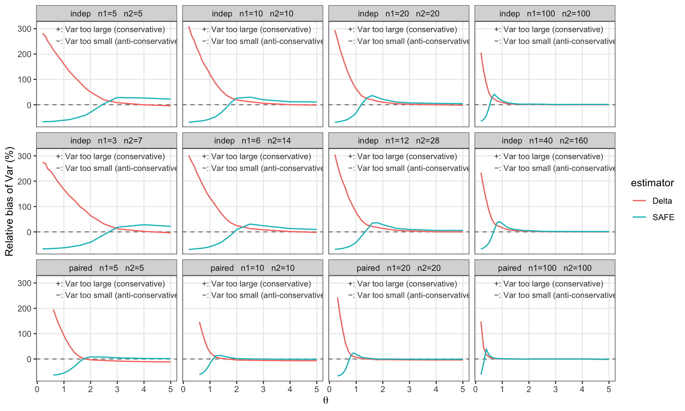
3.1.4 Figure S1 — Coverage of nominal 95% intervals
if (exists("results")) {
cov_df <- dplyr::bind_rows(
results %>% transmute(theta, facet_label, estimator = "PI", cover = cover_delta),
results %>% transmute(theta, facet_label, estimator = "SAFE", cover = cover_safe)
)
ggplot(cov_df, aes(theta, cover, colour = estimator, group = estimator)) +
geom_hline(yintercept = 0.95, linetype = "dashed", colour = "grey50") +
geom_line(linewidth = 0.6) +
facet_wrap(~ facet_label, ncol = 4, nrow = 3,
labeller = labeller(facet_label = strip_labeller)) +
labs(x = expression(theta),
y = "Empirical coverage",
colour = "estimator") +
base_theme +
annotate("text", x = 0.7, y = 0.99,
label = "Target: 0.95\nBelow = under-coverage\nAbove = conservative",
hjust = 0, vjust = 1, size = 3, colour = "grey25")
}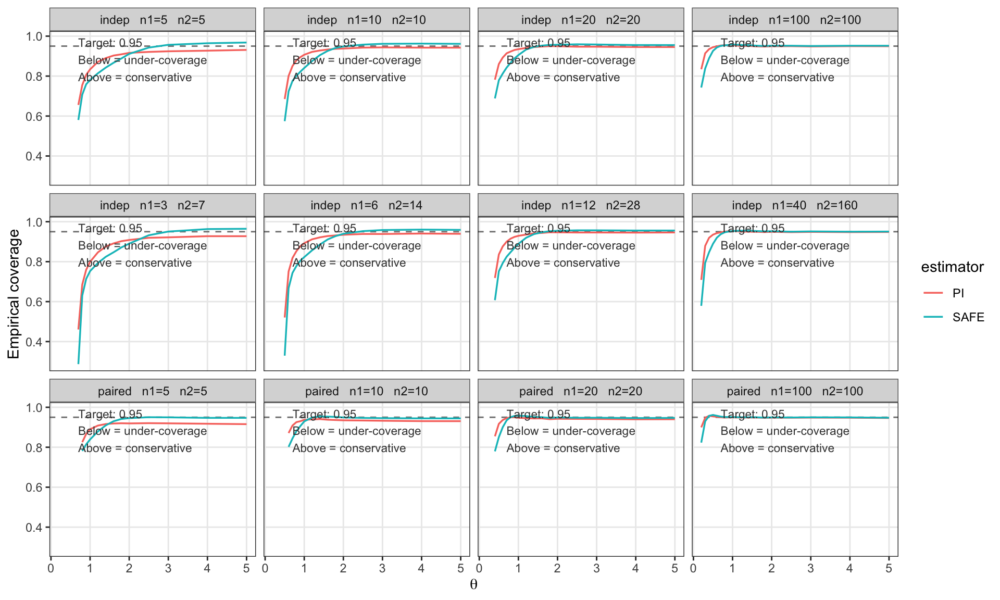
3.1.5 Figure S2 — RMSE of point estimates
if (exists("results")) {
rmse_df <- dplyr::bind_rows(
results %>% transmute(theta, facet_label, estimator = "PI", rmse = rmse_delta),
results %>% transmute(theta, facet_label, estimator = "SAFE", rmse = rmse_safe)
)
ggplot(rmse_df, aes(theta, rmse, colour = estimator, group = estimator)) +
geom_line(linewidth = 0.6) +
facet_wrap(~ facet_label, ncol = 4, nrow = 3,
labeller = labeller(facet_label = strip_labeller)) +
labs(x = expression(theta),
y = expression(RMSE~"("~hat(lnM)~"\u2212"~lnM~")"),
colour = "estimator") +
base_theme +
annotate("text", x = 0.7, y = max(rmse_df$rmse, na.rm = TRUE),
label = "RMSE combines\nbias + variance",
hjust = 0, vjust = 1, size = 3, colour = "grey25")
}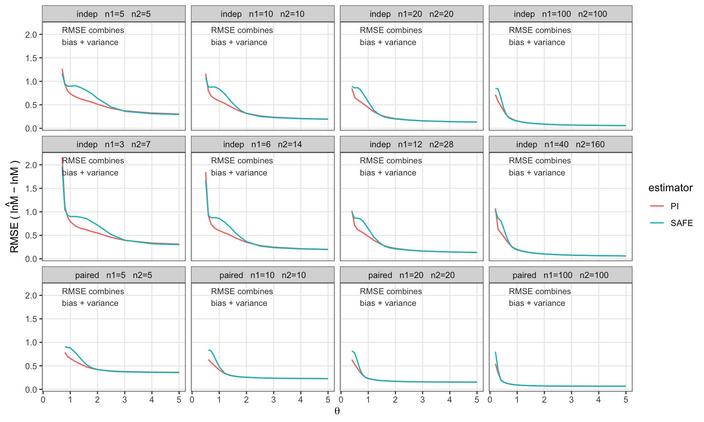
3.1.6 Figure S3 — MCSE of bias from raw_runs/
raw_dir <- here("raw_runs")
raw_files <- list.files(raw_dir, pattern = "^row_[0-9]{3}\\.rds$", full.names = TRUE)
if (!length(raw_files)) stop("No raw files found in: ", raw_dir)
row_index_from_path <- function(p) as.integer(sub("^row_([0-9]{3})\\.rds$", "\\1", basename(p)))
# Compute diagnostics for a single grid cell (single raw_df)
one_raw_diag <- function(raw_df) {
# Defensive: remove rep id if present (rep is not used in computations)
if ("rep" %in% names(raw_df)) raw_df <- raw_df %>% dplyr::select(-rep)
# Match the “ok_d” logic used in the simulation summary:
# keep only replicates where Delta-method pt & var are defined and var>0
ok_d <- is.finite(raw_df$delta_pt) & is.finite(raw_df$delta_var) & (raw_df$delta_var > 0)
# If nothing survives the ok_d filter, return NAs
if (!any(ok_d)) {
return(data.frame(
n_ok_d = 0L,
n_ok_safe = 0L,
RSE_VarMC_SAFEpt = NA_real_,
sd_PI = NA_real_,
sd_SAFE = NA_real_
))
}
df_ok <- raw_df[ok_d, , drop = FALSE]
# Within the ok_d subset, check how many finite SAFE-BC point estimates exist
ok_safe_pt <- is.finite(df_ok$safe_pt)
n_ok_safe <- sum(ok_safe_pt)
# Relative standard error (RSE) of the MC variance estimate of SAFE-BC point:
# RSE(Var_hat) approx sqrt(2/(n-1)) for sample variance under normality
RSE_varmc <- if (n_ok_safe >= 3) sqrt(2 / (n_ok_safe - 1)) else NA_real_
# SD of point estimates (needed for MCSE(bias) below)
# Since true_lnM is constant within a grid cell, sd(est - true) = sd(est).
sd_PI <- sd(df_ok$delta_pt, na.rm = TRUE)
sd_SAFE <- sd(df_ok$safe_pt, na.rm = TRUE)
data.frame(
n_ok_d = nrow(df_ok),
n_ok_safe = n_ok_safe,
RSE_VarMC_SAFEpt = RSE_varmc,
sd_PI = sd_PI,
sd_SAFE = sd_SAFE
)
}
diag_list <- pbapply::pblapply(raw_files, function(f) {
rid <- row_index_from_path(f)
raw_df <- readRDS(f)
d <- one_raw_diag(raw_df)
d$row_id <- rid
d
})
diag_df <- bind_rows(diag_list)
results2 <- results %>%
mutate(row_id = seq_len(nrow(results))) %>%
left_join(diag_df, by = "row_id")
# Recompute MCSE(bias) “from disk”:
# MCSE(bias) ≈ sd(estimator)/sqrt(n_eff)
# where n_eff matches the number of usable replicates in each grid cell.
results2 <- results2 %>%
mutate(
mcse_bias_PI_disk = ifelse(is.finite(sd_PI) & n_ok_d >= 2, sd_PI / sqrt(n_ok_d), NA_real_),
mcse_bias_SAFE_disk = ifelse(is.finite(sd_SAFE) & n_ok_safe >= 2, sd_SAFE / sqrt(n_ok_safe), NA_real_)
)
mc_long <- results2 %>%
transmute(
theta, facet_label,
mcse_bias_PI = mcse_bias_PI_disk,
mcse_bias_SAFE = mcse_bias_SAFE_disk
) %>%
pivot_longer(
cols = c(mcse_bias_PI, mcse_bias_SAFE),
names_to = "metric", values_to = "value"
)
p_mc <- ggplot(mc_long, aes(theta, value, colour = metric, group = metric)) +
geom_line() +
facet_wrap(~ facet_label, ncol = 4) +
labs(
x = expression(theta),
y = "MCSE of bias",
title = "Monte-Carlo error diagnostics: MCSE of bias (per grid cell; from raw_runs)"
) +
base_theme +
theme(legend.position = "bottom")
print(p_mc)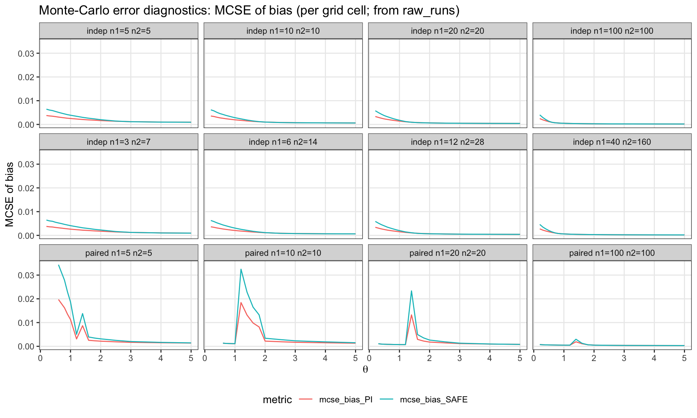
3.1.7 Figure S4 — MCSE of mean variance estimates (from summary)
var_mcse_df <- results %>%
transmute(theta, facet_label,
PI_var_MCSE = mcse_varbar_delta,
SAFE_var_MCSE = mcse_varbar_safe) %>%
pivot_longer(cols = c(PI_var_MCSE, SAFE_var_MCSE),
names_to = "estimator", values_to = "mcse") %>%
mutate(estimator = recode(estimator,
PI_var_MCSE = "PI (delta-var)",
SAFE_var_MCSE = "SAFE (safe-var)"))
p_var_mcse <- ggplot(var_mcse_df, aes(theta, mcse, colour = estimator, group = estimator)) +
geom_line() +
facet_wrap(~ facet_label, ncol = 4) +
labs(x = expression(theta),
y = "MCSE of mean(variance estimate)",
colour = NULL,
title = "Monte-Carlo error of variance estimators (MCSE of the mean)") +
base_theme +
theme(legend.position = "bottom")
print(p_var_mcse)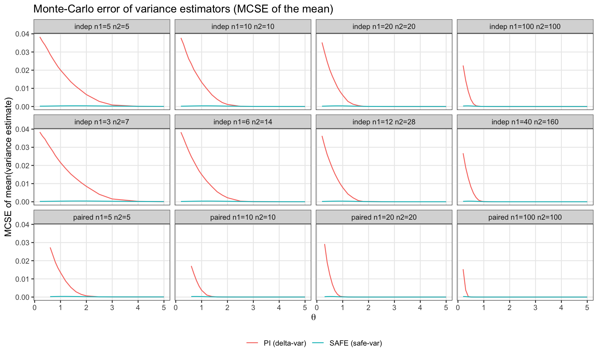
3.2 Tables for the supplement
This section creates compact tables you can paste directly into your HTML supplement.
3.2.1 Table 1 —Method feasibility / stability by facet
tab1_stability <- results %>%
group_by(design, n1, n2, facet_label) %>%
summarise(
theta_min = min(theta, na.rm = TRUE),
theta_max = max(theta, na.rm = TRUE),
# "how often do we fail?"
delta_fail_median = median(delta_fail_prop, na.rm = TRUE),
safe_fail_median = median(safe_fail_prop, na.rm = TRUE),
# "how often does SAFE return ok status?"
SAFE_ok_median = median(SAFE_ok_rate, na.rm = TRUE),
# "how often does Delta variance get capped?"
delta_cap_median = median(delta_cap_rate, na.rm = TRUE),
# also show worst-case over theta (useful for identifying boundary regions)
delta_fail_max = max(delta_fail_prop, na.rm = TRUE),
safe_fail_max = max(safe_fail_prop, na.rm = TRUE),
delta_cap_max = max(delta_cap_rate, na.rm = TRUE),
.groups = "drop"
) %>%
arrange(factor(facet_label, levels = levels(results$facet_label))) %>%
mutate(
design = as.character(design),
facet_label = as.character(facet_label)
)
kable(tab1_stability, digits = 3,
caption = "Table 1. Feasibility / stability diagnostics summarised across θ within each design × (n1,n2) facet.") %>%
kable_styling(full_width = FALSE, bootstrap_options = c("striped", "hover", "condensed"))| design | n1 | n2 | facet_label | theta_min | theta_max | delta_fail_median | safe_fail_median | SAFE_ok_median | delta_cap_median | delta_fail_max | safe_fail_max | delta_cap_max |
|---|---|---|---|---|---|---|---|---|---|---|---|---|
| indep | 5 | 5 | indep n1=5 n2=5 | 0.2 | 5 | 0.227 | 0 | 1 | 0.060 | 0.631 | 0 | 0.171 |
| indep | 10 | 10 | indep n1=10 n2=10 | 0.2 | 5 | 0.077 | 0 | 1 | 0.025 | 0.622 | 0 | 0.169 |
| indep | 20 | 20 | indep n1=20 n2=20 | 0.2 | 5 | 0.009 | 0 | 1 | 0.004 | 0.584 | 0 | 0.155 |
| indep | 100 | 100 | indep n1=100 n2=100 | 0.2 | 5 | 0.000 | 0 | 1 | 0.000 | 0.333 | 0 | 0.083 |
| indep | 3 | 7 | indep n1=3 n2=7 | 0.2 | 5 | 0.269 | 0 | 1 | 0.067 | 0.635 | 0 | 0.166 |
| indep | 6 | 14 | indep n1=6 n2=14 | 0.2 | 5 | 0.110 | 0 | 1 | 0.032 | 0.630 | 0 | 0.170 |
| indep | 12 | 28 | indep n1=12 n2=28 | 0.2 | 5 | 0.019 | 0 | 1 | 0.007 | 0.602 | 0 | 0.159 |
| indep | 40 | 160 | indep n1=40 n2=160 | 0.2 | 5 | 0.000 | 0 | 1 | 0.000 | 0.430 | 0 | 0.106 |
| paired | 5 | 5 | paired n1=5 n2=5 | 0.6 | 5 | 0.002 | 0 | 1 | 0.001 | 0.493 | 0 | 0.097 |
| paired | 10 | 10 | paired n1=10 n2=10 | 0.6 | 5 | 0.000 | 0 | 1 | 0.000 | 0.227 | 0 | 0.050 |
| paired | 20 | 20 | paired n1=20 n2=20 | 0.3 | 5 | 0.000 | 0 | 1 | 0.000 | 0.535 | 0 | 0.103 |
| paired | 100 | 100 | paired n1=100 n2=100 | 0.2 | 5 | 0.000 | 0 | 1 | 0.000 | 0.181 | 0 | 0.041 |
3.2.2 Table 2 — SAFE bootstrap acceptance (kept/tried)
tab2_accept <- results %>%
group_by(design, n1, n2, facet_label) %>%
summarise(
q0 = quantile(boot_accept_prop, 0.00, na.rm = TRUE),
q25 = quantile(boot_accept_prop, 0.25, na.rm = TRUE),
q50 = quantile(boot_accept_prop, 0.50, na.rm = TRUE),
q75 = quantile(boot_accept_prop, 0.75, na.rm = TRUE),
q100= quantile(boot_accept_prop, 1.00, na.rm = TRUE),
mean = mean(boot_accept_prop, na.rm = TRUE),
.groups = "drop"
) %>%
arrange(factor(facet_label, levels = levels(results$facet_label)))
kable(tab2_accept, digits = 4,
caption = "Table 2. SAFE acceptance rate (kept/tried) summarised across θ for each facet. Quantiles highlight worst-case acceptance.") %>%
kable_styling(full_width = FALSE, bootstrap_options = c("striped", "hover", "condensed"))| design | n1 | n2 | facet_label | q0 | q25 | q50 | q75 | q100 | mean |
|---|---|---|---|---|---|---|---|---|---|
| indep | 5 | 5 | indep n1=5 n2=5 | 0.4820 | 0.5444 | 0.6752 | 0.9079 | 1.0000 | 0.7226 |
| indep | 10 | 10 | indep n1=10 n2=10 | 0.4663 | 0.5892 | 0.8083 | 0.9871 | 1.0000 | 0.7800 |
| indep | 20 | 20 | indep n1=20 n2=20 | 0.4718 | 0.7044 | 0.9441 | 0.9997 | 1.0000 | 0.8428 |
| indep | 100 | 100 | indep n1=100 n2=100 | 0.5779 | 0.9897 | 1.0000 | 1.0000 | 1.0000 | 0.9511 |
| indep | 3 | 7 | indep n1=3 n2=7 | 0.4477 | 0.5030 | 0.6285 | 0.8755 | 0.9998 | 0.6898 |
| indep | 6 | 14 | indep n1=6 n2=14 | 0.4484 | 0.5575 | 0.7642 | 0.9761 | 1.0000 | 0.7571 |
| indep | 12 | 28 | indep n1=12 n2=28 | 0.4586 | 0.6634 | 0.9161 | 0.9991 | 1.0000 | 0.8246 |
| indep | 40 | 160 | indep n1=40 n2=160 | 0.5247 | 0.9510 | 0.9997 | 1.0000 | 1.0000 | 0.9281 |
| paired | 5 | 5 | paired n1=5 n2=5 | 0.1982 | 0.6858 | 0.9722 | 0.9996 | 1.0000 | 0.8156 |
| paired | 10 | 10 | paired n1=10 n2=10 | 0.4293 | 0.9150 | 0.9990 | 1.0000 | 1.0000 | 0.9089 |
| paired | 20 | 20 | paired n1=20 n2=20 | 0.1547 | 0.9570 | 1.0000 | 1.0000 | 1.0000 | 0.8822 |
| paired | 100 | 100 | paired n1=100 n2=100 | 0.5318 | 1.0000 | 1.0000 | 1.0000 | 1.0000 | 0.9709 |
3.2.3 Table 3 — Worst offenders (grid-cell level)
tab3_low_accept <- results %>%
dplyr::select(design, n1, n2, theta, facet_label, boot_accept_prop, SAFE_ok_rate) %>%
arrange(boot_accept_prop) %>%
head(20)
tab3_high_cap <- results %>%
dplyr::select(design, n1, n2, theta, facet_label, delta_cap_rate, maxVar) %>%
arrange(desc(delta_cap_rate)) %>%
head(20)
tab3_fail <- results %>%
dplyr::select(design, n1, n2, theta, facet_label, delta_fail_prop, safe_fail_prop, SAFE_ok_rate) %>%
mutate(worst_fail = pmax(delta_fail_prop, safe_fail_prop, na.rm = TRUE)) %>%
arrange(desc(worst_fail)) %>%
dplyr::select(-worst_fail) %>%
head(20)
kable(tab3_low_accept, digits = 4,
caption = "Table 3A. Lowest SAFE acceptance grid cells (smallest kept/tried).") %>%
kable_styling(full_width = FALSE, bootstrap_options = c("striped","hover","condensed"))| design | n1 | n2 | theta | facet_label | boot_accept_prop | SAFE_ok_rate |
|---|---|---|---|---|---|---|
| paired | 20 | 20 | 0.3 | paired n1=20 n2=20 | 0.1547 | 1 |
| paired | 5 | 5 | 0.6 | paired n1=5 n2=5 | 0.1982 | 1 |
| paired | 20 | 20 | 0.4 | paired n1=20 n2=20 | 0.3709 | 1 |
| paired | 5 | 5 | 0.8 | paired n1=5 n2=5 | 0.4256 | 1 |
| paired | 10 | 10 | 0.6 | paired n1=10 n2=10 | 0.4293 | 1 |
| indep | 3 | 7 | 0.2 | indep n1=3 n2=7 | 0.4477 | 1 |
| indep | 6 | 14 | 0.2 | indep n1=6 n2=14 | 0.4484 | 1 |
| indep | 3 | 7 | 0.3 | indep n1=3 n2=7 | 0.4569 | 1 |
| indep | 12 | 28 | 0.2 | indep n1=12 n2=28 | 0.4586 | 1 |
| indep | 6 | 14 | 0.3 | indep n1=6 n2=14 | 0.4644 | 1 |
| indep | 10 | 10 | 0.2 | indep n1=10 n2=10 | 0.4663 | 1 |
| indep | 3 | 7 | 0.4 | indep n1=3 n2=7 | 0.4665 | 1 |
| indep | 20 | 20 | 0.2 | indep n1=20 n2=20 | 0.4718 | 1 |
| indep | 3 | 7 | 0.5 | indep n1=3 n2=7 | 0.4817 | 1 |
| indep | 5 | 5 | 0.2 | indep n1=5 n2=5 | 0.4820 | 1 |
| indep | 10 | 10 | 0.3 | indep n1=10 n2=10 | 0.4837 | 1 |
| indep | 6 | 14 | 0.4 | indep n1=6 n2=14 | 0.4865 | 1 |
| indep | 12 | 28 | 0.3 | indep n1=12 n2=28 | 0.4904 | 1 |
| indep | 5 | 5 | 0.3 | indep n1=5 n2=5 | 0.4911 | 1 |
| indep | 3 | 7 | 0.6 | indep n1=3 n2=7 | 0.4978 | 1 |
kable(tab3_high_cap, digits = 3,
caption = "Table 3B. Highest Delta variance capping rates (fraction of replicates capped).") %>%
kable_styling(full_width = FALSE, bootstrap_options = c("striped","hover","condensed"))| design | n1 | n2 | theta | facet_label | delta_cap_rate | maxVar |
|---|---|---|---|---|---|---|
| indep | 5 | 5 | 0.2 | indep n1=5 n2=5 | 0.171 | 20 |
| indep | 6 | 14 | 0.2 | indep n1=6 n2=14 | 0.170 | 20 |
| indep | 10 | 10 | 0.2 | indep n1=10 n2=10 | 0.169 | 20 |
| indep | 3 | 7 | 0.2 | indep n1=3 n2=7 | 0.166 | 20 |
| indep | 12 | 28 | 0.2 | indep n1=12 n2=28 | 0.159 | 20 |
| indep | 20 | 20 | 0.2 | indep n1=20 n2=20 | 0.155 | 20 |
| indep | 5 | 5 | 0.3 | indep n1=5 n2=5 | 0.154 | 20 |
| indep | 3 | 7 | 0.3 | indep n1=3 n2=7 | 0.153 | 20 |
| indep | 6 | 14 | 0.3 | indep n1=6 n2=14 | 0.152 | 20 |
| indep | 10 | 10 | 0.3 | indep n1=10 n2=10 | 0.149 | 20 |
| indep | 3 | 7 | 0.4 | indep n1=3 n2=7 | 0.145 | 20 |
| indep | 5 | 5 | 0.4 | indep n1=5 n2=5 | 0.143 | 20 |
| indep | 3 | 7 | 0.5 | indep n1=3 n2=7 | 0.132 | 20 |
| indep | 5 | 5 | 0.5 | indep n1=5 n2=5 | 0.131 | 20 |
| indep | 6 | 14 | 0.4 | indep n1=6 n2=14 | 0.131 | 20 |
| indep | 12 | 28 | 0.3 | indep n1=12 n2=28 | 0.128 | 20 |
| indep | 20 | 20 | 0.3 | indep n1=20 n2=20 | 0.124 | 20 |
| indep | 10 | 10 | 0.4 | indep n1=10 n2=10 | 0.123 | 20 |
| indep | 3 | 7 | 0.6 | indep n1=3 n2=7 | 0.120 | 20 |
| indep | 5 | 5 | 0.6 | indep n1=5 n2=5 | 0.117 | 20 |
kable(tab3_fail, digits = 3,
caption = "Table 3C. Highest failure rates (PI undefined and/or SAFE-BC undefined).") %>%
kable_styling(full_width = FALSE, bootstrap_options = c("striped","hover","condensed"))| design | n1 | n2 | theta | facet_label | delta_fail_prop | safe_fail_prop | SAFE_ok_rate |
|---|---|---|---|---|---|---|---|
| indep | 3 | 7 | 0.2 | indep n1=3 n2=7 | 0.635 | 0 | 1 |
| indep | 5 | 5 | 0.2 | indep n1=5 n2=5 | 0.631 | 0 | 1 |
| indep | 6 | 14 | 0.2 | indep n1=6 n2=14 | 0.630 | 0 | 1 |
| indep | 10 | 10 | 0.2 | indep n1=10 n2=10 | 0.622 | 0 | 1 |
| indep | 3 | 7 | 0.3 | indep n1=3 n2=7 | 0.609 | 0 | 1 |
| indep | 5 | 5 | 0.3 | indep n1=5 n2=5 | 0.603 | 0 | 1 |
| indep | 12 | 28 | 0.2 | indep n1=12 n2=28 | 0.602 | 0 | 1 |
| indep | 20 | 20 | 0.2 | indep n1=20 n2=20 | 0.584 | 0 | 1 |
| indep | 6 | 14 | 0.3 | indep n1=6 n2=14 | 0.584 | 0 | 1 |
| indep | 3 | 7 | 0.4 | indep n1=3 n2=7 | 0.582 | 0 | 1 |
| indep | 10 | 10 | 0.3 | indep n1=10 n2=10 | 0.572 | 0 | 1 |
| indep | 5 | 5 | 0.4 | indep n1=5 n2=5 | 0.570 | 0 | 1 |
| indep | 3 | 7 | 0.5 | indep n1=3 n2=7 | 0.542 | 0 | 1 |
| paired | 20 | 20 | 0.3 | paired n1=20 n2=20 | 0.535 | 0 | 1 |
| indep | 5 | 5 | 0.5 | indep n1=5 n2=5 | 0.527 | 0 | 1 |
| indep | 6 | 14 | 0.4 | indep n1=6 n2=14 | 0.527 | 0 | 1 |
| indep | 12 | 28 | 0.3 | indep n1=12 n2=28 | 0.516 | 0 | 1 |
| indep | 10 | 10 | 0.4 | indep n1=10 n2=10 | 0.504 | 0 | 1 |
| indep | 3 | 7 | 0.6 | indep n1=3 n2=7 | 0.504 | 0 | 1 |
| paired | 5 | 5 | 0.6 | paired n1=5 n2=5 | 0.493 | 0 | 1 |
3.2.4 Table 4 — MCSE diagnostics (run-computed)
has_mcse_bias <- all(c("mcse_bias_delta","mcse_bias_safe") %in% names(results))
tab4_mcse <- results %>%
group_by(design, n1, n2, facet_label) %>%
summarise(
# bias MCSE (optional)
mcse_bias_PI_max = if (has_mcse_bias) max(mcse_bias_delta, na.rm = TRUE) else NA_real_,
mcse_bias_SAFE_max = if (has_mcse_bias) max(mcse_bias_safe, na.rm = TRUE) else NA_real_,
# variance MCSE (these are in your results)
mcse_var_PI_max = max(mcse_varbar_delta, na.rm = TRUE),
mcse_var_SAFE_max = max(mcse_varbar_safe, na.rm = TRUE),
.groups = "drop"
) %>%
arrange(factor(facet_label, levels = levels(results$facet_label)))
kable(tab4_mcse, digits = 5,
caption = "Table 4. Monte-Carlo precision (max MCSE over θ within each facet).") %>%
kable_styling(full_width = FALSE, bootstrap_options = c("striped","hover","condensed"))| design | n1 | n2 | facet_label | mcse_bias_PI_max | mcse_bias_SAFE_max | mcse_var_PI_max | mcse_var_SAFE_max |
|---|---|---|---|---|---|---|---|
| indep | 5 | 5 | indep n1=5 n2=5 | 0.00293 | 0.00283 | 0.03832 | 0.00039 |
| indep | 10 | 10 | indep n1=10 n2=10 | 0.00278 | 0.00276 | 0.03776 | 0.00037 |
| indep | 20 | 20 | indep n1=20 n2=20 | 0.00263 | 0.00271 | 0.03525 | 0.00036 |
| indep | 100 | 100 | indep n1=100 n2=100 | 0.00246 | 0.00269 | 0.02258 | 0.00035 |
| indep | 3 | 7 | indep n1=3 n2=7 | 0.00305 | 0.00284 | 0.03836 | 0.00042 |
| indep | 6 | 14 | indep n1=6 n2=14 | 0.00292 | 0.00276 | 0.03829 | 0.00038 |
| indep | 12 | 28 | indep n1=12 n2=28 | 0.00273 | 0.00273 | 0.03628 | 0.00037 |
| indep | 40 | 160 | indep n1=40 n2=160 | 0.00274 | 0.00271 | 0.02673 | 0.00035 |
| paired | 5 | 5 | paired n1=5 n2=5 | 0.00253 | 0.00285 | 0.02733 | 0.00036 |
| paired | 10 | 10 | paired n1=10 n2=10 | 0.00219 | 0.00265 | 0.01713 | 0.00033 |
| paired | 20 | 20 | paired n1=20 n2=20 | 0.00221 | 0.00258 | 0.02920 | 0.00031 |
| paired | 100 | 100 | paired n1=100 n2=100 | 0.00190 | 0.00248 | 0.01534 | 0.00029 |
4 Session info
sessionInfo()R version 4.5.0 (2025-04-11)
Platform: aarch64-apple-darwin20
Running under: macOS 26.2
Matrix products: default
BLAS: /Library/Frameworks/R.framework/Versions/4.5-arm64/Resources/lib/libRblas.0.dylib
LAPACK: /Library/Frameworks/R.framework/Versions/4.5-arm64/Resources/lib/libRlapack.dylib; LAPACK version 3.12.1
locale:
[1] en_US.UTF-8/en_US.UTF-8/en_US.UTF-8/C/en_US.UTF-8/en_US.UTF-8
time zone: America/Edmonton
tzcode source: internal
attached base packages:
[1] stats graphics grDevices utils datasets methods base
other attached packages:
[1] multcomp_1.4-28 TH.data_1.1-3 MASS_7.3-65
[4] survival_3.8-3 mvtnorm_1.3-3 patchwork_1.3.1
[7] kableExtra_1.4.0 orchaRd_2.1.3 here_1.0.1
[10] metafor_4.8-0 numDeriv_2016.8-1.1 metadat_1.4-0
[13] Matrix_1.7-3 lubridate_1.9.4 forcats_1.0.0
[16] stringr_1.5.1 dplyr_1.1.4 purrr_1.1.0
[19] readr_2.1.5 tidyr_1.3.1 tibble_3.3.0
[22] ggplot2_3.5.2 tidyverse_2.0.0
loaded via a namespace (and not attached):
[1] beeswarm_0.4.0 gtable_0.3.6 xfun_0.52 htmlwidgets_1.6.4
[5] lattice_0.22-7 mathjaxr_1.8-0 tzdb_0.5.0 vctrs_0.6.5
[9] tools_4.5.0 generics_0.1.4 parallel_4.5.0 sandwich_3.1-1
[13] pkgconfig_2.0.3 RColorBrewer_1.1-3 lifecycle_1.0.4 compiler_4.5.0
[17] farver_2.1.2 textshaping_1.0.1 codetools_0.2-20 vipor_0.4.7
[21] htmltools_0.5.8.1 yaml_2.3.10 crayon_1.5.3 pillar_1.11.0
[25] nlme_3.1-168 tidyselect_1.2.1 digest_0.6.37 stringi_1.8.7
[29] labeling_0.4.3 splines_4.5.0 latex2exp_0.9.6 rprojroot_2.1.0
[33] fastmap_1.2.0 grid_4.5.0 cli_3.6.5 magrittr_2.0.3
[37] withr_3.0.2 scales_1.4.0 bit64_4.6.0-1 ggbeeswarm_0.7.2
[41] estimability_1.5.1 timechange_0.3.0 rmarkdown_2.29 emmeans_1.11.2
[45] bit_4.6.0 zoo_1.8-14 hms_1.1.3 pbapply_1.7-4
[49] coda_0.19-4.1 evaluate_1.0.4 knitr_1.50 viridisLite_0.4.2
[53] mgcv_1.9-3 rlang_1.1.6 xtable_1.8-4 glue_1.8.0
[57] xml2_1.3.8 svglite_2.2.1 rstudioapi_0.17.1 vroom_1.6.5
[61] jsonlite_2.0.0 R6_2.6.1 systemfonts_1.2.3